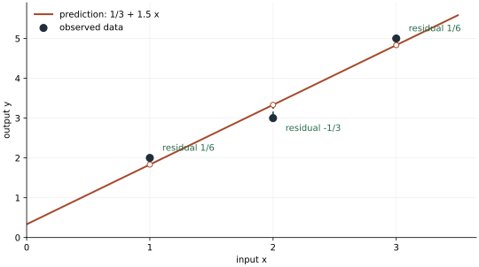

先按面试收益安排复习：核心、研究岗重点与选读
覆盖边界：这是一份量化笔试与研究面试的基础复习教材，不是覆盖全部机器学习的教科书。分层参照官方岗位准备说明、CS229与统计学习课程，按概念依赖和答题迁移价值安排，不是经过统计的真实考题频率。26条主线不应同等投入。
第一轮 · 核心必会：按01任务与损失 → 02线性回归 → 03逻辑回归 → 04偏差方差 → 05正则 → 06优化 → 07决策树 → 08随机森林 → 09提升树 → 13时间验证 → 14泄漏 → 15指标学习。“必会”是本教材的基础目标：解释符号、独立复算、指出不成立的条件，不能仅背模型名。
第二轮 · 研究岗重点：10 PCA、16漂移、17反向传播、19模型搜索、20研究流程、22 XGBoost切分、23校准决策、25时间序列基线。机器学习研究岗应对17与26投入更多时间；交易概率题岗位先完成概率统计教材。具体岗位说明优先于这里的通用安排。
第三轮 · 选读附录：11 SVM与核、12朴素贝叶斯、18聚类与EM、21计数GLM、24特征解释、26训练细节。选读表示时间有限时后看，不表示绝不考；按个人薄弱点调整。保留原编号与锚点，旧链接继续可用。
六个闭卷关卡：手算三点回归；从伯努利概率推交叉熵与梯度；推一个L2最优解；算一次树切分和提升更新；画带重叠标签的训练验证边界；用同组预测算AUC、概率分数与成本门槛。独立完成后，换数字或一个假设再做；复述原答案不算掌握。
尚未系统覆盖：完整凸优化与对偶证明、一般核理论、贝叶斯后验预测与高斯过程、因果推断、预测区间/保形方法、ARIMA/GARCH/状态空间/协整、深度序列网络与Transformer、强化学习、组合优化与微观结构。针对岗位继续专题学习，本书不把短节冒充完整课程。
开始前：从两个数的预测看懂矩阵与梯度
本书把“用输入算预测、衡量错多少、调整参数”反复用于不同模型。下面先用能手算的数把符号接起来；不需要先读线性代数教材。概率与平均的符号也在这里给出，读本书时无需依赖另一份PDF。
1. 加权平均、Σ、log与损失
Σ表示把下标指定的项相加，Π表示相乘。三个误差1、−2、0的平方和Σeᵢ²=1+4+0=5，平均平方误差为5/3。“损失”就是给一次预测错误打的罚分；平方损失把误差平方，所以错2的惩罚是错1的4倍。“期望”E是按发生概率加权的平均；Var是减去均值后平方的平均，衡量波动大小。P(Y=1|X=x)读作已知输入x时标签为1的概率。
log或ln是以e为底的自然对数，将乘法变加法且不改变正数的大小顺序。例如两个独立正确事件概率0.8、0.5，联合概率为0.4，log0.4=log0.8+log0.5。常用导数(log x)′=1/x；最大似然先把概率乘积取log，正是为了把求导变成逐项相加。
2. 向量、内积、矩阵和转置
向量是按位置排列的一串数。输入x=(2,3)，权重w=(4,−1)，内积wᵀx就是对应位置乘完相加：4×2+(−1)×3=5；再加截距b=1，预测得到6。转置ᵀ把一列写成一行，使“行乘列”的写法符合维度。长度平方||x||²=xᵀx=2²+3²=13。
矩阵把多条输入摞成表：X的两行为(1,2)、(1,3)，第一列1可表示截距。β=(1,2)时，Xβ的两项为1×1+2×2=5、1×1+3×2=7，即两条样本预测。Xᵀ把行列互换，其两行为(1,1)、(2,3)。所以n行d列的X乘d维参数得到n维预测，Xᵀ再乘n维误差回到d维参数方向。
3. 逆矩阵是在解方程，正交是在说内积为0
标量2w=6可除2得到w=3；矩阵逆起到类似“撤销变换”的作用。对角矩阵diag(2,4)把(w₁,w₂)变成(2w₁,4w₂)，逆diag(1/2,1/4)把它变回来。若两列完全相同，就无法从输出区分“第一列权重加1”与“第二列权重加1”，此时通常没有唯一逆。实际解线性方程不必真的先把逆算出来。
正交是内积为0，例如(1,1)与(1,−1)内积1−1=0。把观测y=(2,0)用v=(1,1)的倍数近似，预测为(av₁,av₂)=(a,a)，平方误差(2−a)²+a²在a=1最小。预测(1,1)与残差(1,−1)恰好正交；这就是“正交投影”：在允许的方向集合里找最近的点。回归把一个方向扩展成X各列共同张成的集合。
4. 特征值看某个方向被放大多少，半正定保证平方量不为负
对矩阵S=diag(2,1)，沿(1,0)方向输入后得到(2,0)，方向不变只放大2倍；这个方向叫特征向量，倍数2叫特征值。沿(0,1)则倍数1。写作Sv=λv。PCA就在找数据变化最大的方向；它最终转成“找最大的λ”。
对称矩阵S若对任意v都有vᵀSv≥0，叫半正定，缩写PSD。例如上例v=(a,b)时vᵀSv=2a²+b²≥0。协方差矩阵必须满足这点，因为任何线性组合的方差都不能为负。XᵀX也一定半正定，因为vᵀXᵀXv=||Xv||²；若非零v也必为正，才叫正定。后文Hessian是所有二阶导数组成的矩阵，用来描述不同方向的局部弯曲程度。
5. 导数、梯度与“为什么等于0”
一维目标J(w)=(w−3)²。w从1增加一点h，变化率[J(1+h)−J(1)]/h=−4+h，h趋0得到导数−4。它表示w增大时损失正在减小。梯度下降沿导数相反方向走：学习率η=0.25时，w新=1−0.25×(−4)=2，损失从4降到1。学习率就是每次走多大步，符号∇表示梯度。
两个参数时J=(w₁−1)²+(w₂−2)²，梯度是(2(w₁−1),2(w₂−2))。在(0,0)处为(−2,−4)，η=0.5的一步恰到(1,2)。每个分量都是“固定其他参数，只改变这一项”的偏导数。平滑内部最优点需要梯度为0，但这不是充分条件，例如w³在0导数为0却不是最小点；边界最优也未必梯度为0。
链式法则负责串起中间步骤：若z=2w、L=z²，则dL/dw=(dL/dz)(dz/dw)=2z×2=8w；直接把L=4w²求导也为8w。反向传播就是在更大的计算链上重复这件事。若看到∫，读作把小贡献连续累加：∫₀²x dx等于底2、高2三角形面积2；它主要出现在概率加权与贝叶斯预测中。
从题目到模型：这本笔记怎样组织
以“预测明天上涨概率”为例。先要确定今天何时作出预测；接着把此时可见的信息变成特征；逻辑回归通过伯努利似然得到交叉熵，优化器用梯度拟合参数；验证必须把未来隔开；最后上涨概率还需要结合收益幅度、交易成本与风险决定仓位。这条链中任意一步不成立，后面的模型精度就很难解释。
本书先把前20条基础主线压成七组，再补六条有针对性的拓展：A组说明预测对象与基本模型；B组说明复杂度与优化；C组从单树推到集成；D组处理表示、几何与概率模型；E组处理真实数据验证；F组补齐神经网络、隐变量与泛化；G组把所有内容组装成一段完整的研究面试回答。先掌握线性和逻辑回归的手推，再看更复杂方法，能减少重复记忆。
符号约定：X通常是n行d列设计矩阵，y是n维标签，w或β是参数；L是单样本损失，R是总体期望风险。训练参数由训练集决定，超参数由验证选择；最终测试只用于完成选择后的评估。所有模型公式均是教学设定下的结论。
学习时把三个动作串起来
先说清随机性或数据来自哪里，再手推一个最小例子，最后指出结论成立的条件。能复述公式只是第一步；能解释公式为什么在这道题里合法、换条件后哪里先失效，才是迁移能力。
下面每节均包含例子、推导、面试追问、易错点与关联方向。建议先遮住解答，用纸写出状态、目标和第一步；卡住时只看下一条推导，再自行继续。
01 · 监督学习：先弄清在什么时候预测什么 〔核心必会〕
先做一个只有两个答案的任务。某个输入条件下，明天的需求量可能是1，也可能是3，两种情况各占一半。现在必须报一个预测数。报1、2还是3？暂时不谈神经网络，先约定“报错会怎样扣分”。这个约定会决定模型应当学习什么。
先给预测错误一个能计算的分数
如果按“误差的平方”扣分，预测为2时，实际为1会扣1分，实际为3也扣1分，所以平均扣1分。预测为1时，遇到1扣0分，遇到3扣4分，平均扣2分。预测为3同样平均扣2分。因此，虽然2从来不是真实答案，预测2仍优于永远预测1或3。
这里每次的扣分叫损失，按结果出现概率计算的平均损失叫风险。这个“风险”是学习理论的名称，并不是说需求量本身有投资风险。把预测写成任意数\(c\)，就不必挨个试所有候选数：
最后一式可以直接验证：展开前式得到\(c^2-4c+5\)，再配方成\((c-2)^2+1\)。平方最小只能为0，因此\(c=2\)全局最优。这里完全不需要导数；若用导数，\(R'(c)=2(c-2)\)，在2处为0，且两侧都是上升的碗形。
为什么平方损失要预测平均值
刚才的2正好是答案的平均值\((1+3)/2\)。一般令未知答案为\(Y\)，平均值记\(\mu=E[Y]\)。把误差写成\(Y-c=(Y-\mu)+(\mu-c)\)，平方后有三项：
中间项为0，因为\(E[Y-\mu]=E[Y]-\mu=0\)。第一项是答案围绕平均值的随机波动，与选择\(c\)无关；第三项在\(c=\mu\)时最小。给定输入\(X=x\)后同样成立，只是所有平均都改成“在这个输入条件下平均”。因此平方损失学习的是条件均值\(E[Y\mid X=x]\)，而不是每条样本都能完全猜中。
换一个损失，最优答案会改变。按绝对误差\(|Y-c|\)扣分时，最优目标是条件中位数；分类的负对数损失则要求预测条件概率。不能先随意选模型，最后才决定它的分数究竟应该代表均值、排序还是概率。
先慢算：预测目标为什么不是“把所有答案都猜中”
- 保持输入条件不变，现在真实答案为1的概率是3/4，为3的概率是1/4。这里改变的是答案出现比例，不是同一条记录既等于1又等于3。
- 若预测一个数\(c\)，先分别算两种可能的误差，再按概率平均：\(R(c)=\tfrac34(1-c)^2+\tfrac14(3-c)^2\)。
- 逐项展开为\(\tfrac34(1-2c+c^2)+\tfrac14(9-6c+c^2)=3-3c+c^2\)。要看最低点，把它写成\((c-1.5)^2+0.75\)。所以现在最佳预测为1.5，而不再是各半时的2。
- 核对平均值：\(E[Y]=(3/4)\times1+(1/4)\times3=1.5\)。答案分布变了，平方损失下的最佳预测也随之改变。后文的条件均值只是在“输入相同”的这一堆结果里重复这个平均动作。
数据里的三个对象：输入、答案、规则
特征是预测时能看到的输入，例如过去5日成交量；标签是事后拿来核对的答案，例如下一日收益；模型是把输入变成预测的规则\(f(x)\)。训练样本是若干对\((x_i,y_i)\)。“监督学习”的监督，就是训练时这些答案已经提供。
真实世界的所有未来结果无法提前知道，因此总体风险通常算不出来。我们暂用训练样本的平均扣分代替：
这叫经验风险。\(n\)是样本数，\(L\)是已经定义的扣分规则。训练就是在允许的规则里找经验风险小的一个。但训练样本只是一批已见答案，模型可以记住它们；新数据上是否还好，需要独立验证，不能用同一份成绩重复证明自己。
放回量化任务：先把时间线画对
假设每天15:05才拿到完整收盘数据，却用当天15:00收盘价买入、下一天收盘价卖出的收益作目标。标签作为研究对象没有数学错误，但预测以后再回到15:00成交不可执行。应先规定真正可成交时刻，再定义进入到退出的收益；特征也必须在决策时刻已公布、已接收。标签用未来结果是正常的，把未来结果放进输入才是泄漏。
面试追问：训练误差很低，为什么不够？因为它只回答“这批已经见过的答案拟合得怎样”。还要说明新样本如何隔离、标签何时实现、是否反复根据测试结果挑模型，以及分数如何变成真实决策。边界：以上均方推导需要二阶矩有限；重尾到平方期望不存在时，目标本身也要重新考虑。
A · 先亲手拟合一条线，再理解矩阵
02 · 线性回归：从三个数据点一步步求出一条直线 〔核心必会〕
本节的慢读顺序：先算直线，再读矩阵
如果线性代数已忘，第一遍只读下文第一至第六步，先用两个未知数\(a,b\)解一条直线；第七步以后只是同一计算的缩写和解释，不是前六步的前提。下文使用“残差＝真实减预测”，所以正残差表示预测偏低。若别处把误差定义成“预测减真实”，所有残差符号会反向，但平方和相同。
进入第七步前先闭卷核对三件事：数据点有3个，待估参数只有2个；最小化的是三个误差平方的和，不是让每个误差都为零；解出参数后必须逐条代回。正文得到的三个残差\(1/6,-1/3,1/6\)确实不全为0，但\(1/6-1/3+1/6=0\)，并且\(1(1/6)+2(-1/3)+3(1/6)=0\)。这两条是最优点的两项核验，不要把“平方和最小”误读为“预测完全正确”。
这一节只解决一件事：给定一些输入和对应结果，怎样找到一条预测得比较好的直线。先不用矩阵，也不要求你记得求导。我们把三个点的计算做完，再说明矩阵、正交投影和概率解释其实在描述同一件事。
第一步：先说清楚输入、答案和要找的两个数
假设有三条记录：输入为 \(1\) 时结果为 \(2\)，输入为 \(2\) 时结果为 \(3\)，输入为 \(3\) 时结果为 \(5\)。把输入叫作 \(x\)，实际结果叫作 \(y\)，三对数据就是 \((1,2),(2,3),(3,5)\)。一对数据叫一条样本。
我们尝试用同一个规则预测三条记录：
符号 \(\widehat y\) 上的小帽子表示“预测值”，用来和已经知道的实际值 \(y\) 区分。\(a\) 是斜率：输入增加 \(1\)，预测就增加 \(a\)。\(b\) 是截距：输入为 \(0\) 时，直线给出的预测是 \(b\)。现在不是把 \(x,y\) 当未知数；数据已经给了它们。我们要找的是一组共同使用的 \(a,b\)。
例如先试 \(a=1,b=1\)。依次代入三个输入，预测为 \(2,3,4\)：前两条恰好正确，第三条比实际的 \(5\) 少了 \(1\)。再试 \(a=2,b=0\)，预测变成 \(2,4,6\)，后两条各多了 \(1\)。这说明“画一条线”很容易，难点是怎样公平地比较不同的线。
第二步：把“预测得不好”变成可以计算的数
我们把“实际值减预测值”叫作残差，用 \(e\) 表示。第一种候选直线的残差为 \(0,0,1\)，第二种为 \(0,-1,-1\)。正残差表示预测偏低，负残差表示预测偏高。
不能直接把残差相加作为好坏：一条记录错 \(1\)，另一条错 \(-1\)，和为 \(0\)，但两条其实都错了。先把每个残差平方再相加，可以避免正负抵消。对上面的两条候选线，平方误差总和分别为 \(0^2+0^2+1^2=1\) 和 \(0^2+(-1)^2+(-1)^2=2\)，第一条更好。
对任意 \(a,b\)，三条记录的误差平方总和是：
例如第一项中的 \(2\) 是第一条实际结果，\(b+a\) 是把 \(x=1\) 代进直线得到的预测。后两项同理。这就是普通最小二乘，英文缩写 OLS：“最小”是让 \(S\) 尽量小，“二乘”是把每个误差平方。它是一种明确选定的比较规则，不是所有场景唯一正确的规则；若改用绝对误差，解法和最优结果可能不同。
第三步：最优直线为什么必须满足“残差之和为零”
先固定斜率 \(a\)，只把截距增加一点 \(\delta\)。\(\delta\) 就表示一次小调整，可以是正数或负数。三个预测都增加 \(\delta\)，所以三个残差都从 \(e_i\) 变成 \(e_i-\delta\)。这里下标 \(i=1,2,3\) 只是在标记第几条记录。
用平方展开式 \((u-v)^2=u^2-2uv+v^2\)，调整后的总误差是：
如果残差之和为正，就表示整体预测偏低。取一个足够小的正 \(\delta\)，中间的负项就能让总误差下降；若残差之和为负，反向调低截距也能改善。因此，当直线已经最好、不能再靠上下移动改善时，必须有：
把三个残差逐项代入：
常数相加为 \(2+3+5=10\)，三个 \(-b\) 合为 \(-3b\)，含斜率的项合为 \(-6a\)，所以第一条方程是：
第四步：调整斜率，得到第二条方程
这次固定截距，只把斜率增加 \(\delta\)。因为预测为 \(b+ax\)，三条记录的预测分别增加 \(\delta,2\delta,3\delta\)，残差相应变成 \(e_1-\delta,e_2-2\delta,e_3-3\delta\)。
与上一步同样的道理，如果括号中的加权残差不为零，就仍能向某个方向小幅转动直线、降低误差。因此最好的一条线还必须满足 \(e_1+2e_2+3e_3=0\)。代入数据：
第二条方程就是：
如果已经学过导数，同一个过程可压写为 \(\partial S/\partial b=-2\sum_i e_i\)、\(\partial S/\partial a=-2\sum_i x_i e_i\)，再令它们为零。但这只是对上面两个调整过程的简称；不应该让这个简称代替推导。
第五步：把两条方程真正解出来
现在只有两个未知数和两条方程。把式(1)两边都乘 \(2\)，得到 \(6b+12a=20\)。再用式(2)减去它：
把 \(a=3/2\) 代回式(1)：\(3b+6(3/2)=10\)，即 \(3b+9=10\)，所以 \(b=1/3\)。最终拟合直线为：
它不是题目一开始就给定的公式；它是由“让三条记录的误差平方和最小”一步步算出来的。
第六步：代回三条记录，检查解是否合理
| 输入 \(x\) | 实际值 \(y\) | 预测值 \(1/3+3x/2\) | 残差 \(y-\widehat y\) | 残差平方 |
|---|---|---|---|---|
| \(1\) | \(2\) | \(11/6\approx1.8333\) | \(1/6\) | \(1/36\) |
| \(2\) | \(3\) | \(10/3\approx3.3333\) | \(-1/3\) | \(1/9\) |
| \(3\) | \(5\) | \(29/6\approx4.8333\) | \(1/6\) | \(1/36\) |
平方和为 \(1/36+1/9+1/36=6/36=1/6\)，小于前面两条候选线的 \(1\) 和 \(2\)。三个残差之和为 \(1/6-1/3+1/6=0\)；乘输入再相加也得到 \(1(1/6)+2(-1/3)+3(1/6)=0\)，两条求解条件都满足。

只比较两条候选线还不能证明它优于所有直线。更完整的检查是：把最优参数再改为 \(a+u,b+v\)。新残差为 \(e_i-u x_i-v\)，展开总平方和时，一次项包含的正是刚验证为零的 \(\sum e_i\) 和 \(\sum x_i e_i\)，所以：
平方不可能为负，因此任何调整都不会更好。也就是说，这两条调整条件得到的解，确实使误差在所有候选直线中最小，而不只是比前面举的两条候选线好。
第七步：矩阵只是把刚才的三行计算合在一起
把每条记录写成一行，第一列固定放 \(1\)，第二列放输入 \(x\)。第一列负责乘上截距 \(b\)。将两个参数按“截距在前、斜率在后”排成列：
这张三行两列的输入表叫设计矩阵。矩阵乘法在这里就是每行分别与参数做加权相加：第一行给 \(1b+1a\)，第二行给 \(1b+2a\)，第三行给 \(1b+3a\)。因此 \(\widehat y=X\beta\) 并没有引入新模型，仍是那三条直线预测。
\(X^T\) 中的 \(T\) 表示转置，即把行与列交换。它的两行分别是 \((1,1,1)\) 和 \((1,2,3)\)。所以 \(X^Te\) 的两项恰好为 \(\sum e_i\) 和 \(\sum x_i e_i\)。我们前面得到的两条条件，现在合写成：
这组方程叫正规方程。直接按行列相乘可算出：
例如右下角的 \(14\) 来自 \(1^2+2^2+3^2\)，右端的 \(23\) 来自 \(1\cdot2+2\cdot3+3\cdot5\)。这两行正是之前手工解的 \(3b+6a=10\)、\(6b+14a=23\)。
若矩阵可逆，逆矩阵记为 \((X^TX)^{-1}\)，它表示把右端再变回参数的运算。本例也可以手算：
逆矩阵公式是解同一组方程的另一种记法，不能反过来当作学习的起点。实际写程序也通常直接解最小二乘问题，不必显式算出逆矩阵。
第八步：“正交投影”到底在投影什么
现在把三条实际结果放在一起，看作一个三维点 \(y=(2,3,5)\)。任意候选直线给出的三个预测组成另一个三维点：
改变 \(a,b\)，这个预测点只能在由两个固定方向 \((1,1,1)\)、\((1,2,3)\) 张成的平面上移动。“张成”在这里就是允许把这两个方向各乘一个数再相加；所有能得到的点构成的集合叫 \(X\) 的列空间。
误差平方和 \(S\) 正是三维实际点与三维预测点之间的距离平方。因此寻找最小二乘解，就是在这个平面上找离 \(y\) 最近的点，这个最近点叫作正交投影。
两个方向的点积是对应坐标相乘再相加；点积为零叫正交。最优残差 \(e=y-\widehat y\) 与刚才两个方向的点积都为零，已经在第六步实际验证。平面上其他方向都是这两个方向的加权和，所以它也与平面内的每个方向正交。“正交补”只是把所有这类垂直方向组成的集合起了一个名字，不是一个额外需要套用的公式。
第九步：为什么有时又说“最小二乘是最大似然”
前面求解完全没有用到概率。现在额外假设：实际结果是直线给出的平均水平，加上一点独立的随机噪声；噪声以零为中心，小偏差常见、大偏差少见，并服从标准的钟形分布——正态分布。
\(\sigma^2\) 是噪声方差，控制结果通常散得多开。在给定参数时，第 \(i\) 条实际结果的概率密度与 \(\exp[-e_i^2/(2\sigma^2)]\) 成正比；这表示误差平方越大，观察到它就越不容易。连续变量的某个精确点本身概率为零，这里比较的是密度。
三条噪声独立，联合密度相乘。把固定数据下随参数变化的这份联合密度叫似然，记为 \(L(a,b)\)：
先把 \(\sigma^2>0\) 视作固定。前面的系数不随 \(a,b\) 变化；指数函数随括号里的数增加而增加，而括号中是 \(S\) 的负数。因此让似然最大，恰好等于让平方误差 \(S\) 最小。这就是 OLS 与最大似然估计（MLE）的联系。
取自然对数只是把乘法变成加法、便于计算；对数严格递增，因此不会改变哪里取得最大值：
这句话有条件：独立、同方差的正态噪声让负对数似然变成平方误差加一个常数。没有正态假设仍然可以定义并计算 OLS，只是不能直接把它叫作这个概率模型的 MLE。这里“同方差”是说各条记录使用同一个噪声方差。如果各条噪声方差为不同的 \(\sigma_i^2\)，相同计算会得到 \(\sum_i e_i^2/\sigma_i^2\)：噪声更大的记录权重更小。这叫加权平方误差，不能继续不加区分地使用普通平方和。
选读：QR怎样把这个例子变成更容易解的方程
如果你现在只想掌握回归，前面已经完成求解。下面继续把求解器的名字与实际动作对应起来。两个向量“正交”表示点积为零；“单位长度”表示各坐标平方和为1。QR要做的，是把原来两个不垂直的输入列，改写成两个垂直、长度都为1的方向，同时记住它们怎样组合回原输入。
第一列是 \(c_1=(1,1,1)^T\)，长度为 \(\sqrt{1+1+1}=\sqrt3\)。用每个坐标除以这个长度，就得到单位方向 \(q_1=(1,1,1)^T/\sqrt3\)。第二列是 \(c_2=(1,2,3)^T\)，先计算它沿第一方向的分量：
这里的分量为什么是点积？令拿走的倍数为 \(t\)，要求余量与 \(q_1\) 正交，即 \(q_1^T(c_2-tq_1)=0\)。因为 \(q_1^Tq_1=1\)，移项就得到 \(t=q_1^Tc_2\)。把这一部分从 \(c_2\) 中拿走：\(c_2-(2\sqrt3)q_1=(1,2,3)^T-(2,2,2)^T=(-1,0,1)^T\)。剩下这条方向与 \(q_1\) 的点积为零，长度为 \(\sqrt2\)；除以长度后得到 \(q_2=(-1,0,1)^T/\sqrt2\)。所以原来两列可写成：
把 \(q_1,q_2\) 放进矩阵 \(Q\) 的两列，把上面四个组合系数放进 \(R\)，就得到：
\(R\) 左下角为0，称为上三角矩阵；这让我们可以从最后一行往回解。因为 \(Q\) 的列互相正交且长度为1，\(Q^TQ=I\)，其中 \(I\) 是对角线为1、其余为0的两行两列单位矩阵。最优残差与这两个方向的点积均为零，所以 \(Q^T(y-QR\beta)=0\)；展开并代入 \(Q^TQ=I\)，才得到 \(R\beta=Q^Ty\)。对本例，右端也逐项能算：
先解第二行 \(\sqrt2\,a=3/\sqrt2\)，两边乘 \(\sqrt2\) 得 \(2a=3\)，所以 \(a=3/2\)。再解第一行 \(\sqrt3\,b+2\sqrt3\,a=10/\sqrt3\)，两边除 \(\sqrt3\)，得到 \(b+2a=10/3\)，所以 \(b=1/3\)。结果与最开始的两条方程完全一致。
为什么实现中喜欢这种方式？直接先算 \(X^TX\) 会把不同方向的尺度差异进一步放大；例如某一方向缩小为原来的 \(10^{-4}\)，形成 \(X^TX\) 后对应平方就变成 \(10^{-8}\)，更容易丢失数值精度。QR通过方向变换求同一个答案，不必先形成这个平方矩阵。更一般的SVD会把输入分成方向与放大倍数，第10节会用四个点把它实际乘出来。
最后：哪些情形会失效，计算机怎样求解
如果所有输入都为 \(1\)，模型每次只能看到 \(a+b\)：\(a=1,b=2\) 与 \(a=2,b=1\) 给出相同预测，不能唯一识别两个参数。矩阵语言称列不独立；“列满秩”表示各输入列没有这种精确重复关系。它是参数能否唯一确定的条件。
数据中若有一个特别极端的错误值，平方会放大它的影响；若用过去数据预测未来，未来关系变化也不会被最小二乘自动解决。拟合误差小，不能单独证明样本外预测好。
实际计算可调用 numpy.linalg.lstsq(X, y, rcond=None)。其中 X 就是上面的三行两列表，y 是三个结果；返回的参数顺序与列顺序一致，先截距、再斜率。QR的实际计算已经在上面的选读段逐步演示；SVD与降维的联系放到第10节，用同一组数据继续说明。
遮住结果，重新写出三项平方误差；解释为什么两种小调整分别导出残差和为零、输入加权残差和为零；手解 \(a,b\) 并算出误差平方和 \(1/6\)；最后把两条方程译成矩阵。能做到这些，再记正规方程和投影的名称才有意义。
03 · 逻辑回归：从一条概率预测手推到更新参数 〔核心必会〕
任务是预测某事件明天会不会发生，答案只用\(y=1\)或\(y=0\)记录。我们希望输出概率：0.8表示在同样条件下，大约八成会发生，而不是“答案就是0.8”。普通线性函数可能输出−2或3，超出概率范围，所以先算一个没有范围限制的分数，再把它转成概率。
从分数到概率：先只看一个输入
输入\(x\)是一项特征，权重\(w\)决定它影响多大，截距\(b\)决定基础倾向。先计算\(z=wx+b\)。再使用下面这条固定转换规则，称为sigmoid：
代入\(z=0\)，得到\(p=1/2\)；代入\(z=1\)，得到\(p\approx0.7311\)；\(z=-1\)时约0.2689。分数越大，概率越接近1，但不会超过1。这个式子也等价于\(p/(1-p)=e^z\)：事件发生与不发生的概率之比，随着分数按指数改变。取log后，这个概率比的log恰为线性分数\(z\)，这就是模型具体作出的假设。
为什么训练要用负log概率
真实标签为1时，模型分给它的概率是\(p\)；真实为0时，分给它的概率是\(1-p\)。若希望已观察答案尽可能容易出现，就要让这些真实答案的概率尽可能大。对独立样本，联合概率是各项相乘；取log后变成相加，再加负号转成最小化问题。
这个统一写法没有隐藏步骤：\(y=1\)时第二项乘0消失，只剩\(-\log p\)；\(y=0\)时第一项消失，只剩\(-\log(1-p)\)。它叫二元交叉熵，也就是本模型的负log似然。若真实为1，预测0.8的损失为\(-\log0.8\approx0.2231\)，预测0.2则为1.6094；对真实答案越自信，罚分越小。
把导数每一层都乘出来
参数先影响\(z\)，\(z\)再影响\(p\)，\(p\)最后影响损失，因此要按链式法则逐层求变化率。先固定标签\(y\)，只对概率求导：
接着对sigmoid求导。把\(p=(1+e^{-z})^{-1}\)看成外层倒数、内层指数，导数为\(e^{-z}/(1+e^{-z})^2\)。另一方面，\(p(1-p)\)代入相同表达式也恰好得到它，因此\(\partial p/\partial z=p(1-p)\)。两层相乘，分母被约掉：
最后两式来自\(z=wx+b\)：对\(w\)求导为\(x\)，对\(b\)为1。多个输入时，每个权重各乘自己那项输入；一批样本时再按既定损失的求和或平均方式汇总，不要少除或多除样本数。
真的更新一次，看损失是否下降
取\(x=2,y=1,w=0,b=0\)。为了只观察一个参数，本次固定\(b=0\)不更新。初始\(z=0,p=0.5\)，损失\(\log2\approx0.6931\)。权重导数\((0.5-1)\times2=-1\)，学习率取0.5，更新\(w_{\rm new}=0-0.5(-1)=0.5\)。新分数为1，概率0.7311，真实标签的损失降到约0.3133。
导数是负数时，增加权重会局部降低损失；梯度下降中的减号正是选择这个方向。步长过大仍可能造成不稳定，因此“方向正确”不意味着任意学习率都正确。
先慢算：从单条梯度到一批样本的更新
下文会先求单条记录的导数。若一批两条记录的输入为\(x_1=1,x_2=2\)，标签为\(y_1=0,y_2=1\)，且初始\(w=b=0\)，则两条分数都是0，两条概率都是0.5。采用平均交叉熵时：
学习率取1，基于旧参数同时更新，得到\(w=0.25,b=0\)。再计算两条分数为0.25、0.5，概率约0.5622、0.6225。虽然第一条负类被预测得更差，第二条正类改善更多，平均损失从0.6931降到约0.6500。一次更新优化的是这一批的总目标，不保证每条记录都同时改善。若定义的是损失总和，就不除以2；目标缩放变了，同一学习率的步长也会变。
面试追问：分类一定用0.5作阈值吗？若误报成本是漏报的9倍，预测正类的成本为\(9(1-p)\)，负类为\(p\)，只有\(9(1-p)\lt p\)，即\(p\gt0.9\)，才应判正。估概率与根据成本作决定是两步。边界：完全可分数据在无正则时可能让参数不断增大而没有有限MLE；计算中应使用稳定的log概率实现，避免先算巨大指数后溢出。
04 · 偏差与方差：用四种结果看懂平均预测误差 〔核心必会〕
假设同一个输入对应的真实平均答案是2，但实际答案仍会随机为1或3，各占一半。即使已经知道平均数2，也不可能提前知道这次到底是1还是3。现在比较两种训练方法：第一种换一批训练数据后，可能预测1，也可能预测3；第二种总预测1.5。哪一种在新数据上平均更准？
先把“数据噪声”和“训练不稳定”分开
第一种方法预测1或3，各一半。新答案也独立地为1或3，因此有四种等概率组合。预测1遇答案1，误差平方0；预测1遇3，误差平方4；预测3遇1，误差平方4；预测3遇3，误差平方0。平均测试平方误差为\((0+4+4+0)/4=2\)。
这个方法的平均预测是2，正好等于真实规律，所以没有系统偏离。但每次换训练集，它的预测会在1和3间晃动。第二种方法总预测1.5，平均测试平方误差是\([(1-1.5)^2+(3-1.5)^2]/2=1.25\)。它有系统偏离，却比第一种方法平均更准。这已经说明“无偏”不自动等于“误差最小”。
给刚才的三种误差来源命名
固定某个输入\(x\)，真实平均答案写为\(f^*(x)\)。实际答案\(Y=f^*(x)+\epsilon\)，其中\(\epsilon\)叫噪声，给定输入时平均为0，方差为\(\sigma^2\)。本例\(f^*=2\)，噪声取−1或1，因此\(\sigma^2=1\)。
训练数据集用\(D\)表示，不同训练集产生不同预测\(\widehat f_D(x)\)。把反复换训练集后预测的平均记为\(m(x)=E_D[\widehat f_D(x)]\)。偏差是\(m-f^*\)，方差是预测围绕\(m\)的波动，不可约噪声是实际答案即使围绕真实平均也仍有的随机性。
先慢算：三个误差分量平方后究竟有几项
下面分解容易卡在“交叉项为零”。先把三份误差临时记成\(A=f^*-m\)、\(B=m-\widehat f_D\)、\(C=\epsilon\)。字母只是帮助展开；固定输入位置以后，A是常数，B来自换训练集，C来自新答案的噪声。
- 对\(2AB\)求平均，A可以提出，剩\(2A E[B]\)。由于\(E[B]=m-E[\widehat f_D]=0\)，它为0。
- 对\(2AC\)同理得到\(2A E[C]=0\)，用到噪声均值为0。
- 最后的\(2BC\)不能只因两者均值为0就消掉；本节还假设新测试噪声与训练集独立，因此\(E[BC]=E[B]E[C]=0\)。例如令B=C且各取±1，则两者均值仍为0，却有BC恒为1；这说明独立条件不是装饰。
剩下的三个平方平均才分别叫偏差平方、训练不稳定性的方差和噪声方差。先记住六项如何减少为三项，再把缩写换回原符号，推导就不会凭空跳到一个公式。
不是背结论：展开误差为什么只剩三项
先在预测误差中加上再减去\(m\)，把它分成三份：
平方后得到三个平方项和三个交叉项。第一份\(f^*-m\)在固定\(x\)时是常数；第二份对训练集求平均为0，因为\(E_D[m-\widehat f_D]=0\)。所以前两份交叉项的平均为0。再假定测试噪声与训练集独立、且噪声均值0，那么涉及噪声的两个交叉项也都为0。
现在把第一种方法代回去：\(m=2\)，偏差平方0；预测围绕2的方差为\([(1-2)^2+(3-2)^2]/2=1\)；噪声为1，总和2。第二种方法\(m=1.5\)，偏差平方0.25，训练波动为0，噪声仍为1，总和1.25。两次都与直接列举完全一致。
怎样把分解用于真正训练
若模型简单到不管输入都报一个常数，复杂规律可能学不到，偏差就大；如果模型能把很小训练集的每个噪声点都穿过去，训练误差虽低，换一批数据边界却可能剧变，方差就大。增加数据、加参数惩罚、平均多个互补模型，主要是控制某些不稳定来源；增加模型表达能力则可能减少欠拟合，但也可能提高波动。
学习曲线是把训练量逐步增大，分别画训练与验证误差。两边都高时先查任务、输入与模型是否表达不足；训练低验证高时，先查不稳定、泄漏和分布差异。它只提供诊断线索，不能从一张曲线精确读出三个分量。真正的偏差方差定义涉及反复训练的平均，不是把一次训练误差叫“偏差”、一次验证误差叫“方差”。
面试追问：模型越大测试误差一定越高吗？不一定，正则、优化、数据结构甚至过参数化现象都会改变趋势，必须用同样的验证过程比较。边界：上式是平方损失下、固定输入位置的分解；换成分类0/1损失不能原样照搬，训练与测试共享噪声时交叉项也未必为0。
05 · 正则化：为什么宁愿不完全拟合，也要让参数小一点 〔核心必会〕
先慢算一：把误差与惩罚逐行配方，为什么得到1.5
只找一个参数\(b\)，训练答案是3。这里b只是一个被惩罚系数的名字，不是通常单独不惩罚的截距。原误差平方是\((3-b)^2\)，加上参数平方惩罚以后：
第四行为什么加2.25又减4.5？因为\((b-1.5)^2=b^2-3b+2.25\)，而括号外乘2，额外加进来的是\(2\times2.25=4.5\)，所以括号外必须减掉同样的量。最后平方项非负，在\(b=1.5\)时为0，因此最小目标为4.5。直接代回也得\((3-1.5)^2+1.5^2=2.25+2.25=4.5\)；原来选b=3时新目标为9，反而更大。
若改用导数，两部分分别是\(-2(3-b)\)和\(2b\)，相加为\(4b-6\)，令其为0仍得1.5。下面正文的一维例子使用目标除以2的约定、训练答案为4，因此会得到2；不是两段推导互相矛盾，先核对答案与损失缩放即可。
先慢算二：两列相同，怎么从逐条误差走到岭回归方程
这个小例子暂不加独立截距，两列都当作需要惩罚的特征。两条输入行都为(1,1)，两条答案都为2。给两个特征的权重分别命名为\(w_1,w_2\)，因此每条预测都等于\(w_1+w_2\)。若只拟合平方误差，只要和为2便一样好；无法从这批数据分辨是谁起作用。用非负数\(\lambda\)控制参数惩罚强度，现取\(\lambda=2\)，目标明确采用“误差平方和的一半＋参数平方和的一半乘λ”：
求\(w_1\)导数时先固定\(w_2\)：误差内部对\(w_1\)的导数为−1，所以误差项贡献\(-2(2-w_1-w_2)\)，惩罚贡献\(2w_1\)。展开相加为\(4w_1+2w_2-4\)。同理另一项为\(2w_1+4w_2-4\)。最优点满足：
两式相减得到\(2w_1-2w_2=0\)，即两权重相等；代回第一式得\(6w_1=4\)，所以各为2/3，预测和为4/3。岭回归不仅在原来的无穷多个和为2的解里挑一个，它还接受预测误差，让总权重进一步收缩。现在再看矩阵缩写：\(X^TX=\begin{pmatrix}2&2\\2&2\end{pmatrix}\)，加\(\lambda I\)后变\(\begin{pmatrix}4&2\\2&4\end{pmatrix}\)，右端\(X^Ty=(4,4)^T\)，正是刚刚两条手算方程。
先慢算三：Lasso的0点为什么有资格成为最优点
Lasso把参数的平方惩罚换成绝对值惩罚。这里\(\beta\)是一个待学参数，z是训练建议值，\(\lambda\ge0\)是惩罚强度。对下文目标\(J(\beta)=(\beta-z)^2/2+\lambda|\beta|\)，0的左导数为\(-z-\lambda\)，右导数为\(-z+\lambda\)。在0左边向右走应当不增加目标，在0右边继续向右走应当不降低目标，因此要求“左斜率≤0≤右斜率”，即\(-\lambda\le z\le\lambda\)。这说明尖点可以是最小点，不必假装那里有普通导数。例z=0.5、λ=1时，\(J(0)=0.125\)，\(J(0.5)=0.5\)，\(J(-0.5)=1\)，把系数直接压到0确实更合算。一般相关多变量情形仍需联立或迭代，不能逐列生套这一标量结论。
先只有一个要学的数\(\beta\)。训练数据建议它取4，因此原始损失为\((\beta-4)^2/2\)，显然在4处最小。如果训练样本很少、这个4可能受噪声影响，我们可以额外惩罚过大的参数，宁愿留一点训练误差，也不让估计过度追随这批数据。
L2惩罚先用一个数手算
给目标加上\(\lambda\beta^2/2\)，这就是L2正则。\(\lambda\)是惩罚强度，不是数据自动给出的真值；它通常通过训练之外的验证选择。本例先取\(\lambda=1\)：
直接比较：取4时原误差为0，但惩罚为8，总目标8；取2时原误差为2、惩罚也为2，总目标4。因此新目标确实更喜欢2。要找精确最小点，对两项分别求导，得到\((\beta-4)+\lambda\beta=0\)，移项为\((1+\lambda)\beta=4\)。
\(\lambda=0\)回到4；\(\lambda=1\)得到2；惩罚更大时继续向0收缩。这个最小例子说明了Ridge（岭回归）的动作：不是把模型输出随意变小，而是在“拟合训练答案”和“约束参数幅度”之间重新作选择。
为什么相关输入特别需要稳定性
假设两列输入完全一样，模型只通过\(w_1+w_2\)影响预测。只要求这个和为2时，\((2,0)\)、\((1,1)\)、\((100,-98)\)在训练上预测相同。最后一组系数虽然极大，却可以互相抵消；新输入哪怕有一点测量差，抵消就可能被打破。
加入\(w_1^2+w_2^2\)惩罚后，在“和固定为2”的这些组合里，\((1,1)\)的平方和2，小于\((2,0)\)的4，更远小于\((100,-98)\)的19604。真正同时优化损失和惩罚时，总和也可能小于2，但“避免大系数互相抵消”的机制已经可以看见。
一般线性模型的L2目标为\(\|y-X\beta\|^2/2+\lambda\|\beta\|^2/2\)。前一本节已经逐项解释最小二乘导数；增加的每个参数惩罚导数就是\(\lambda\beta_j\)，所以联立方程变为\((X^TX+\lambda I)\beta=X^Ty\)。这里\(I\)只在对角线上为1，把每个权重的平方惩罚加入自己那条方程，不会凭空混入其他权重。
L1为什么可以把参数真的压成0
现在改惩罚为\(\lambda|\beta|\)，称L1；用于线性回归时称Lasso。先看同一个单坐标问题，训练建议的值用\(z\)表示：
必须分正负两侧，不能假装绝对值在0也有普通导数。若\(\beta\gt0\)，绝对值等于\(\beta\)，导数为\(\beta-z+\lambda\)，候选解\(z-\lambda\)只有在\(z\gt\lambda\)时才在这一侧。若\(\beta\lt0\)，绝对值为\(-\beta\)，导数为\(\beta-z-\lambda\)，候选解\(z+\lambda\)只在\(z\lt-\lambda\)时合法。
如果\(-\lambda\le z\le\lambda\)，两边都不产生合法的非零最小点，最小值落在尖点0。例\(z=4,\lambda=1\)得到3；\(z=0.5,\lambda=1\)得到0。这叫软阈值：先减掉一个门槛，不够门槛就消失。多变量有相关时，不能把原始每一列独立套这个简式，通常需要迭代求解。
怎样用，怎样避免错误解释
特征单位改变会改变参数数值：同一影响用“元”和“万元”表示，所需权重不同。统一惩罚前要认真处理尺度；均值、标准差只能在训练集估计，再用于验证数据。截距通常单独处理，不和普通权重一样惩罚。早停是另一种限制拟合的方式：只训练有限步，先验证再决定何时停，并不是每种模型中都与L2完全等价。
面试追问：非零Lasso系数是否证明这个变量有因果作用？不证明，相关变量可能互相替代，选择也可能随样本变化。边界：正则可改善估计稳定性，但不能修复未来信息泄漏、错误标签或无法成交的交易假设；惩罚强度不能看着最终测试收益反复调。
06 · 梯度下降：方向对了，为什么还可能越走越远 〔核心必会〕
训练模型可以先看成“找一个让损失小的数”。目标\(J(w)=w^2/2\)，最低点显然为0。当前\(w=1\)，导数\(J'(w)=w=1\)表示往右增加参数会提高损失，因此应往左走。梯度下降规定：把当前参数减去“步长×当前导数”。
\(t\)只是第几次更新，\(\eta\)叫学习率，决定每次走多大。这里\(w_{t+1}=(1-\eta)w_t\)。取\(\eta=0.5\)，从1变成0.5、0.25、0.125，平方损失依次下降；取\(\eta=1\)，一步就到0。但若取3，从1变成−2，再变4，再变−8，虽然每次都按负梯度方向走，却越来越远。
收敛条件不是经验口号，可以直接算
把目标改成\(J(w)=aw^2/2\)，\(a\gt0\)。\(a\)越大，曲面弯得越急；导数为\(aw\)，更新倍率为\(1-\eta a\)。要让距离不断缩小，必须让倍率的绝对值小于1：
例如\(a=10\)，稳定步长应小于0.2。选0.05时倍率0.5，每次缩小一半；选0.3时倍率−2，符号来回翻且幅度翻倍。符号翻转本身未必坏，幅度是否收缩才决定这一简单模型是否收敛。
多个方向速度不同：理解“条件数”
现在有两个参数，目标\(J(u,v)=(100u^2+v^2)/2\)。第一项很陡，第二项很平。分别求偏导得到\((100u,v)\)。从\((1,1)\)出发，若统一步长为0.01，第一步\(u\)直接到0，\(v\)却只从1到0.99。第100步\(v=0.99^{100}\approx0.3660\)，仍没到0。
想把\(v\)走快而把步长改成1，\(u\)方向的倍率就变−99，会剧烈发散。因此不能只说“学习率大一点更快”。这个例子的最大曲率是100、最小曲率是1，比值100叫条件数；更一般的二次问题用Hessian的最大、最小正特征值计算同一比值。Hessian是各参数二阶导数组成的表，特征方向表示互不混合的主要弯曲方向，本例正好就是两个坐标轴。
缩放特征、合适的参数化或预条件化，目的之一是让各方向尺度更接近，避免一个步长被最陡方向限制。但“所有特征标准化后一定好优化”也不是定理，相关性和目标结构仍会影响曲率。应比较相同目标下的收敛与验证表现。
先慢算：改善尺度到底改变了哪一个运算
正文的目标\(J(u,v)=(100u^2+v^2)/2\)里，两个方向曲率差100倍。引入新参数\(a=10u\)，也就是\(u=a/10\)。把它真正代回：\(100u^2=100(a/10)^2=a^2\)，于是同一目标写成\(J(a,v)=(a^2+v^2)/2\)。它在两个新坐标上的梯度是(a,v)。
原起点(u,v)=(1,1)对应(a,v)=(10,1)。在新坐标中用步长0.5，得到(a,v)=(5,0.5)，再变回原参数得到(u,v)=(0.5,0.5)。若在原坐标直接用相同步长0.5，则u会变成\(1-0.5\times100=-49\)，并不相同。重新参数化改善了尺度，也就改变了更新在原空间的形状；它不是把原来的固定步长运算换个名字。一般问题中还要处理相关方向，不能仅凭这一对角例子断言标准化能解决所有病态问题。
为什么只看一小批样本也能训练
总损失若是所有样本损失的平均，其梯度也是各样本梯度的平均。全量计算每一步都扫全部数据，代价高；随机梯度下降（SGD）每次随机选一个或一小批样本，用它们的平均梯度估计全量梯度。只要抽样机制正确，这个估计的平均方向与全量一致，但每步会有随机波动。
用两个样本的当前梯度−3和1作例子，全量梯度是−1。随机等概率选一个，可能读到−3，也可能1，单步甚至会朝相反方向；但重复抽样的平均为\((-3+1)/2=-1\)。小批次不是每一步都使总损失下降的保证，它是用更便宜、更频繁的更新换取带噪声的方向信息。
batch就是每次抽的样本数。更大batch一般能降低梯度估计噪声，但一次更新也更贵；应比较相同计算预算达到的验证结果，而不是只比较更新次数。Adam会跟踪梯度的一阶、二阶滑动统计量调坐标步长，其细节可后学；本节先掌握更新式、步长与曲率为何相关。
面试追问：损失一直下降是否表示模型越来越好？只证明训练目标在改善，新数据可能已开始变差。边界：上面的精确收敛区间针对正曲率二次目标；深网络不全是这种碗形，随机梯度也另有假设，不能把一维公式当作所有优化器的通用保证。
07 · 决策树：逐个试一个切口，看看误差能少多少 〔核心必会〕
任务是根据一个输入数\(x\)预测连续答案\(y\)。只有四条训练数据：\((1,1),(2,1),(3,5),(4,5)\)。如果必须用一个数预测全部样本，应该报什么？如果允许按输入大小分成两组，再分别报一个数，能否更准？这就是最简单回归树的起点。
不切分时，先算清基准误差
按平方损失，最佳常数是标签平均值\((1+1+5+5)/4=3\)。因此四条预测都为3，残差分别−2、−2、2、2，平方和为16。这里的平方残差和常缩写为SSE；它是本节比较切分的标准，不需要先引入额外概率模型。
一棵树内部的分支是在问“输入是否不大于某个阈值”。走到不再继续分的组，称为叶子。回归叶子的预测就是该组标签均值，因为上一节已经证明均值使常数平方误差最小。
候选切口一个个算，而不是猜“这里看起来合适”
先试阈值2.5。左组输入1、2，标签都为1，所以预测1、组内SSE为0。右组输入3、4，标签都为5，预测5、SSE也为0。总误差从16降到0，改善16。
再试1.5。左边只有标签1，误差0；右边标签1、5、5，平均为\(11/3\)。三个残差为\(-8/3,4/3,4/3\)，平方和如下：
所以2.5比1.5更好。阈值3.5按对称性也只有\(16/3\)增益。在这个只有一个特征、四个不同输入的例子里，只需比较相邻输入之间的三个切口；切在1和2之间的任何位置都会产生同一分组，不必搜索无穷多个实数阈值。
多个特征时，对每列分别枚举候选阈值，比较同一个损失下降量，选择当前最好的一项。切完之后再在左右子组内重复同样操作。每次只选眼前最优，不保证最后整棵树在所有可能树中全局最优，所以称为贪心算法。
分类树用“组内混杂程度”代替平方误差
若答案只有0、1，叶子可报告其中正类比例。四个标签为0、0、1、1时，父组两类各半，混杂程度高；按合适阈值分开后，每组只剩同一类，混杂为0。常用Gini指标为\(1-\sum_k p_k^2\)，其中\(p_k\)是组内第\(k\)类比例。
两类各半时Gini为\(1-0.5^2-0.5^2=0.5\)；全为一类时为\(1-1^2-0^2=0\)。比较切分要按左右样本比例加权：左组占四分之一、右组三分之三时，不能把两组混杂程度不加权地直接平均。熵是另一种混杂指标，目标相似，但具体数值与切分选择可能不同。
先慢算：分类树为什么要按组大小加权
仍用四条标签(0,0,1,1)。父组Gini为\(1-(2/4)^2-(2/4)^2=1/2\)。若切口把第一条单独分左边，左组只有0，Gini为0；右组三条标签为(0,1,1)，两类比例为1/3和2/3，因此Gini为\(1-1/9-4/9=4/9\)。
1/4与3/4是一个随机抽到的训练样本落进左右组的比例。若直接算\((0+4/9)/2=2/9\)，就把只含1条的小组与含3条的大组当成同等规模，已经换了评价问题。切口若把两个0与两个1完全分开，两组Gini均0，改善为1/2；因此后者优于刚才的1/6。这一轮是在相同数据、相同指标下比较候选分组。
为什么树很容易把噪声也切出来
如果不限制深度，继续切到每个叶子只有一条记录，叶预测就能等于该条标签，训练SSE变0。但这只是给每条已见记录单独分配答案；新样本所在叶子的预测可能主要由一个偶然噪声点决定。
因此要控制最大深度、最小叶样本数、最小增益或进行剪枝，并在独立数据上选择参数。“更纯”只说明训练组更整齐，未必意味着未来预测更好。特别在金融噪声很大时，一片只含少数样本的叶子不足以证明稳定规律。
树不需要先假设线性关系：它用不同区域里的常数近似整体形状，也能先按某特征分状态再按另一特征分层，表示特征交互。但普通回归树不会自然延伸一条训练范围外的直线；新输入超过最大训练值时，通常仍落在边界叶子，输出原来那组的常数。
面试追问：需要标准化输入吗？普通轴对齐树主要使用值的排序与阈值分组，严格单调变换通常不改变可实现的分组，所以通常不像距离模型那样依赖尺度。边界：类别高基数、缺失值处理、训练增益重要性都有额外问题；特征被频繁切分不等于它是因果变量。
08 · Bagging与随机森林：为什么平均能变稳，也为什么不能无限变好 〔核心必会〕
假设两个模型都围绕正确答案随机出错：误差各为−1或1，各一半，而且彼此独立。只看一模型，误差平方始终1；把两者预测平均以后，误差会怎样？先把四种情况列全，比直接记一个集成公式更清楚。
平均降低误差波动的最小例子
两误差\((-1,-1),(-1,1),(1,-1),(1,1)\)各概率1/4。平均误差分别为−1、0、0、1，因此均值0，方差为\((1+0+0+1)/4=1/2\)。两个模型如果错在不同方向，会互相抵消一部分。
但如果两个模型永远同时为−1或同时为1，平均以后仍是−1或1，方差仍1。数量相同，结果完全不同；关键不只是模型数，还要看它们是否一起犯同样的错误。
把“共同犯错”写进公式
设每个模型误差均值为0、方差都为\(\sigma^2\)，任意两模型误差相关都为\(\rho\)，于是协方差为\(\rho\sigma^2\)。平均\(B\)个误差时，方差展开中有\(B\)个自身平方项，以及\(B(B-1)\)个不同模型的乘积项：
这只是把平方展开再取平均，没额外假定平均模型无敌。代\(B=100,\sigma^2=1,\rho=0.2\)，得到\(0.2+0.8/100=0.208\)。树数即使无限增加，公共误差那一部分仍留下0.2。若\(\rho=0\)，才有熟悉的\(1/B\)下降。
这里各模型方差相同、两两相关相同是为了让公式易读。真实模型不完全对称时，就直接使用各自的方差和协方差相加；“误差互补比只看单模型分数更重要”的结论仍然成立。
先慢算：平均两个模型时，“相关”那一项从哪来
设两个误差\(e_1,e_2\)平均都为0、各自方差1，相关系数为0.5，因此\(E[e_1e_2]=0.5\)。平均误差是\((e_1+e_2)/2\)。先平方，再取平均：
分母4来自“除以2”也要平方；中间的2来自\((a+b)^2=a^2+2ab+b^2\)。若两误差独立，中间平均乘积为0，结果才降到0.5。若完全同步，相关为1，结果为1，根本没有减小。正文的大B公式就是把这项展开推广到更多模型，而不是另一个凭空出现的定理。
Bagging怎样制造不同模型
Bagging从同一训练集有放回抽样，每次抽出与原集同样多的行，然后各自训练模型，最后平均。原集四条记录编号1、2、3、4，一次可能抽成2、2、4、1：第2条重复两次，第3条一次未出现。另一棵树可能抽成3、4、3、1，见到的样本权重就不同。
单棵深树对样本变化很敏感，重采样会产生不同切分，平均能缓解部分不稳定。对本来很稳定、偏差很大的模型，重复抽样未必有同样大的收益；平均也不会自动纠正所有模型共有的错误标签或未来信息泄漏。
随机森林再加一层随机性：每次找切分时，不允许所有特征都竞争，只从随机选的一部分特征中找。否则一个特别强的特征可能让每棵树都在同处先切，树彼此仍很像。限制候选特征会让单树有时变弱，却可能降低误差相关，整体平均反而更好。
怎样评估，避免把袋外样本当万能测试集
一棵树没有抽到的记录叫袋外样本，简称OOB。可以只用“未训练过该样本的树”预测它，形成方便的内部评估。但是这种评估依赖普通随机抽样的适用条件，不能替代所有部署验证。
金融时间序列若把不同日期混在一起抽，某棵树可能用未来训练、再预测过去；标签还可能覆盖相同未来区间。即使某一行本身袋外，相关的另一行仍可能把答案信息带进来。因此要先按真实时间边界划分训练与验证，再在训练部分内部做随机森林；最终成绩来自严格留出的未来区间。
面试追问：增加到一万棵树是否必然更好？通常能稳定有限树数的随机波动，但收益会递减，计算开销也增大，不能消灭共同偏差。边界：上面的方差计算是误差波动的教学模型，不是对每个具体森林测试误差的保证；还需检查预测偏差、数据漂移及业务成本。
09 · Gradient Boosting：让下一棵树学习当前还错在哪里 〔核心必会〕
只有两条数据：输入1对应答案3，输入2对应答案7。先不用树，给两条都预测平均值5。两项残差“真实减预测”分别为−2和2。现在允许加一个小模型，专门修正这两个方向相反的错误，这就是顺序提升模型的基本想法。
第一次加模型，完整算一次损失
定义总损失为两条平方误差和的一半：
初始模型\(F_0\)都报5，总损失为\((4+4)/2=4\)。现在训练一棵只有一次切分的小树：输入小于等于1.5报−2，大于1.5报2。注意这棵树的训练答案是残差，不是原来的3和7；它记为\(h_1\)。
取学习率\(\eta=0.5\)，只采纳一半修正。新的预测为\(F_1=F_0+0.5h_1\)，于是两条变成4和6。残差缩为−1和1，新损失\((1+1)/2=1\)。再训练下一树拟合−1和1，仍只加一半，预测变3.5和6.5，损失变\((0.25+0.25)/2=0.25\)。每一步都把尚未修好的部分交给下一个小模型。
为什么“拟合残差”等于梯度下降
先把某条样本当前预测当作一个可调的数\(F_i\)。单条损失为\((y_i-F_i)^2/2\)。先对内部误差求导，再乘内部对\(F_i\)的导数−1：
负梯度为\(y_i-F_i\)，恰好就是残差。这表示：如果每条预测都能独立调整，损失希望它朝残差方向移动。但真实模型不能为每一条输入单独存任意答案，所以训练一棵受限制的小树去近似这些希望的调整量。再把它加进总体函数，就把普通“参数空间走一步”变成“预测函数加一小块”。
上式每一项都有例子对应：\(r_i^{(1)}\)为−2和2，\(h_1\)是按1.5切分的修正树，\(F_m\)是已经加了\(m\)棵树的总预测。弱学习器就是每步使用的受限模型，例如浅树，并不是要求它自己一次解决完整任务。
换损失时，不要继续机械地写普通残差
分类若使用逻辑回归的交叉熵，整体函数\(F\)通常输出logit分数，而概率为\(p=\sigma(F)\)。前面的链式推导已得到对分数的导数\(p-y\)，所以修正目标为\(y-p\)。新树加到分数上，随后重新经sigmoid得到概率；不能把树输出直接加到概率上，否则可能得到超过1的“概率”。
有些实现再使用二阶导数来估计一步该走多大。固定一个叶子，设它给所有叶内样本加同一个数\(w\)。当前各样本一阶导数为\(g_i\)、二阶导数为\(h_i\)，把损失在当前点作二阶近似，再加\(\lambda w^2/2\)惩罚，和\(w\)有关的部分是：
对\(w\)求导得到\(\sum g_i+(\sum h_i+\lambda)w\)，令其为0，叶权为\(-\sum g_i/(\sum h_i+\lambda)\)。这不是额外神秘规则，只是一个一元二次函数求最小值；整棵树如何选结构还需比较切分增益和复杂度。
先慢算：分类时树究竟加在概率上，还是分数上
只看一个正类样本y=1。当前分数F=0，经sigmoid转成概率0.5。交叉熵对F的负梯度为\(y-p=0.5\)，所以假设新树在这里输出h=0.5。取学习率0.4，新分数为\(F_{\rm new}=0+0.4\times0.5=0.2\)。
必须先更新分数，再重算概率：\(p_{\rm new}=1/(1+e^{-0.2})\approx0.5498\)，损失为\(-\log0.5498\approx0.5981\)，低于初始的0.6931。若把同一修正直接加到概率0.5上，会得到0.7；这是另一种未经推导的更新，不是刚才的函数梯度步骤。平方损失中预测值本身就是F，所以前面的残差例子没有这层转换；换成分类时必须补回。
面试追问：学习率很小是不是一定不拟合噪声？不是，小步走很多棵树仍可能过拟合。应同时选择树深、树数和学习率，早停依据独立验证成绩。边界：上述两样本例子故意让小树能完美拟合残差；实际受限树可能只能部分修正，金融时间验证与成本评估仍不可省略。
10 · PCA：用四个点看懂最大方差方向和信息压缩 〔研究岗重点〕
四条二维记录分别为\((2,0),(-2,0),(0,1),(0,-1)\)。现在只能保留每条记录的一个数，之后再尽量还原原来的两个数。保留横坐标还是纵坐标？横向变化更大，丢掉它损失可能更严重。PCA就是把这个直觉推广到任意方向，而不局限于原坐标轴。
先中心化，再比较最简单的两个方向
中心化表示每一列减去该列平均。本例两列均值已经为0。沿横轴保留投影后，四个编码是2、−2、0、0，方差\((4+4+0+0)/4=2\)。沿纵轴保留则是0、0、1、−1，方差\((0+0+1+1)/4=0.5\)。
这里用分母\(n=4\)定义样本矩阵的方差；改成\(n-1\)会把所有方向一起乘同一比例，不改变哪个方向最大。PCA先选横向，是为了保留更多输入变化，并没有用任何预测标签。
任意斜方向，编码到底怎样计算
取单位方向\(v=(\cos\theta,\sin\theta)\)，其长度为1。每个点\(x\)的编码是内积\(x^Tv\)：对\((2,0)\)为\(2\cos\theta\)，对\((-2,0)\)为\(-2\cos\theta\)，另两个为\(\pm\sin\theta\)。四个编码均值仍为0，因此方差为：
因为\(\cos^2\theta\le1\)，最大值是2，在横轴方向达到。要求方向长度为1非常关键：否则把方向向量乘100，所有编码和方差都会被放大，比较就失去意义。
为什么会出现协方差矩阵与特征值
把四条中心化记录写成\(4\times2\)矩阵\(X\)。协方差矩阵\(S=X^TX/4\)的第一对角项是横坐标平方平均2，第二项是纵坐标平方平均0.5；非对角项是横纵乘积平均，本例为0。
第二式只是把前面的四个内积平方相加写成矩阵乘法。要最大化它同时要求\(v^Tv=1\)，可以把约束用一个辅助数\(\lambda\)加入目标：\(v^TSv-\lambda(v^Tv-1)\)。对每个方向分量求导，前项给\(2Sv\)，后项给\(2\lambda v\)，令导数为0得到\(Sv=\lambda v\)。
这叫特征向量方程：经过\(S\)变换后方向不变，只放大\(\lambda\)倍。左乘\(v^T\)得到\(v^TSv=\lambda\)，所以特征值就是该单位方向的方差；选最大特征值对应的方向。对本例，横轴倍数2、纵轴倍数0.5，正好还原手算结果。
压缩后怎样还原，丢掉了什么
若保留横向\(v=(1,0)\)，编码\(z=x^Tv\)，还原为\(zv\)。前两点完整还原，后两点都变成\((0,0)\)，每点损失平方1，平均重构误差0.5。保留纵向则前两点各损失4，平均误差2。保留最大方差方向也最小化这一类正交线性压缩的平方重构损失。
先慢算：有交叉项时，一次投影与SVD如何接起来
为看见非坐标轴的方向，另取两条中心化记录(1,1)、(−1,−1)，组成\(X=\begin{pmatrix}1&1\\-1&-1\end{pmatrix}\)。先逐项相乘：\(X^TX=\begin{pmatrix}2&2\\2&2\end{pmatrix}\)，再除样本数2，得到\(S=\begin{pmatrix}1&1\\1&1\end{pmatrix}\)。非对角的1表示两列一起增减。
- 选长度为1的方向\(v_1=(1,1)^T/\sqrt2\)。相乘得\(Sv_1=(2,2)^T/\sqrt2=2v_1\)，所以这一方向方差为2。两个点的编码分别为\((1+1)/\sqrt2=\sqrt2\)与\(-\sqrt2\)，平方平均也为2。
- 与它垂直的方向\(v_2=(1,-1)^T/\sqrt2\)，编码分别为\((1-1)/\sqrt2=0\)与0，方差为0。保留它会丢失全部变化；保留\(v_1\)则把编码乘回方向，完整还原原始数据点。
- 现在把X的同一关系写成\(X=2u_1v_1^T\)，其中\(u_1=(1,-1)^T/\sqrt2\)。逐项外积为\(u_1v_1^T=\tfrac12\begin{pmatrix}1&1\\-1&-1\end{pmatrix}\)，乘2恰好回到X。这是本例只有一个非零方向的SVD：2叫奇异值，不是方差；其平方除样本数\(2^2/2=2\)，才是前面的协方差特征值。
这里不用先掌握大矩阵分解算法。先确认“点→编码→还原”每一步会算，再把SVD看作稳定找这些方向的方法。方向v与−v给出的编码符号相反，但还原结果相同，不构成两个不同的主成分。
多个主成分要求彼此正交，避免第二个方向只是重复第一个。实际计算可使用SVD：把\(X\)拆成方向与放大倍数，取前几个方向；这是稳定求解方法，基础理解不依赖先会手工分解大型矩阵。
面试追问：保留99%输入方差就保留了99%预测能力吗？没有。本例若答案由纵坐标正负决定，横轴虽然解释更多输入波动，却把真正预测信息丢掉。标准化也会改变选择：把两列各除自己标准差后，两列方差都为1，原来“横轴更重要”的尺度判断消失。边界：PCA只在训练集拟合均值与方向，再作用于新数据；不看标签也不代表可以读取未来输入分布。
13 · 时间验证：把每条标签什么时候才知道画出来 〔核心必会〕
有每天一条金融记录，要在第\(t\)天决策，预测接下来3天的收益。标签直到第\(t+3\)天结束才完整知道。现在准备从第10天开始验证，能不能把第1到9天全部当训练？不能：第7、8、9天的标签分别要到10、11、12天才知道，预测第10天时还没实现。
先走查边界，不急着调用切分函数
给每条样本记两个时点：特征决策日\(t\)，标签完成日\(e_t=t+3\)。若验证从第10天开始，采取保守约定，训练标签完成日必须严格早于10。那么第6天标签完成于9，可用；第7天完成于10，不可用；8、9更不可用。
删除这些跨进验证边界的训练样本叫purge，中文可理解成清除标签重叠。它不是“数据表排好序以后切一刀”就自动完成的事情。第7天的特征即使当时已经知道，它的答案在第10天决策时仍未完整实现，不能用于监督训练。
如果实际在一天收盘以后预测下一天，而且某条标签在当天收盘已实现，严格与非严格不等号可以按时间戳调整。关键不是永远固定删3行，而是让训练过程确实只用决策以前已经得到的答案。不同标签窗口、停牌或不规则采样都可能让固定行数失效。
Walk-forward就是反复模拟“站在当时向前看”
第一轮用第1到6天的合法标签训练，验证第10到12天。下一轮若验证从第13天开始，训练最多可包括第9天标签，因为它到12天完成。训练范围扩大，验证窗口向未来移动，这叫扩展窗口。
也可以只保留最近一段过去数据，每次把较老记录丢掉，叫滚动窗口。扩展窗口样本多，可能保留更多历史信息；滚动窗口更重最近环境，但样本较少。哪种更好取决于稳定性与样本量，不能仅因为“金融会变”就默认最短窗口最好。
每轮的预处理也要重新在该轮训练数据上拟合。标准化、缺失填补、特征筛选、PCA都属于训练的一部分。只按时间训练模型，却用整个五年数据先做标准化，仍然让未来参与了训练规则。
参数、超参数、测试集分别负责哪件事
以Ridge为例，权重是训练数据求出的参数，\(\lambda\)是你外部选择的超参数。候选\(\lambda=0.1\)在三轮验证误差为1、9、1，平均\(11/3\)；候选\(\lambda=1\)为2、2、2，平均2。在相同目标下可先选择后者，并观察前者为什么某轮失效。
这些窗口已经用于选择\(\lambda\)，所以是验证集。最终还应留一段此前不用于这种选择的测试期，冻结规则后再评估。如果看完测试再换特征、换窗口、换成本假设，测试反馈已经参与了选择，不能继续把同一结果称作全新独立证据。
隔开日期后，还需隔开什么
同一事件可能生成多条记录，同一公司不同证券可能共享信息；若拆到两侧，模型可能通过相关副本识别答案。评估新实体迁移时，应按公司或事件分组；评估未来同市场时，优先按日期统一划分，避免同一天别的资产的未来信息绕进训练。
gap是在训练与验证之间留一个时间空档；embargo通常指额外隔离验证邻近、特别是验证之后可能受其信息影响的样本。纯前向训练本来不使用验证后的记录，后侧embargo可能没有额外作用。它们都不能替代逐条检查标签区间和信息可用时间。
先慢算：窗口平均分究竟在平均日期，还是平均记录
调参前先固定评价单位。假设两个未来验证窗口分别有100条、10条记录，模型在各窗口的平均平方误差为1、4。若问题是“随机抽一条验证记录，平均错多少”，应把总误差相加再除总记录数：
若想让每段市场环境同等重要，则可预先约定对两个窗口等权平均，得到\((1+4)/2=2.5\)。两者没有算术矛盾，回答的是不同问题。不能给一个模型报按记录加权、给另一个模型报窗口等权，再从更小的数字宣布胜出。平均规则、每轮训练范围和标签隔离，都应在选择超参数以前确定；还要分别保留每窗成绩，不能让大窗口掩盖某个环境失效。
面试追问：随机K折什么时候可以用？当样本近似独立同分布、部署目标也与之匹配时可以；时间序列不应不经判断就使用。边界：时间切分只是信息隔离的一部分，不能自动修正财报发布日期、退市样本缺失、成交假设和反复测试带来的选择偏差。
14 · 数据泄漏：不看标签，也可能偷偷看到了未来 〔核心必会〕
训练输入只有0和2，未来测试输入为100。我们先把输入减去平均值，再训练模型。正确做法只能用训练均值\((0+2)/2=1\)，训练值变−1和1，测试值变99。如果先把三条一起求均值，得到34，训练值变−34和−32：未来那条100已经改变了训练过程，虽然完全没有读取测试标签。
先区分“学规则”和“应用规则”
从训练数据估计均值、方差、缺失填充值或特征方向，叫fit；把这些已经固定的规则作用于新数据，叫transform。两步不能合并成“所有数据一起预处理”，因为预处理本身就是从数据学习。
以上例子没有保证读取未来一定提高测试分数；它指出评估过程不再模拟部署时能做的事。无论分数变好还是变差，信息边界已经被破坏。正确流程是：训练部分fit并transform，验证部分只transform；每轮交叉验证都重新fit自己的训练部分。
机器学习Pipeline可以把多个fit/transform步骤串起来，降低误用机会，但它只执行你给出的数据划分和规则。如果原始字段本身来自未来，放进Pipeline也不会自动变合法。
金融数据为什么必须区分三个“日期”
一份财报属于第一季度，季度结束日3月31日；报告4月20日正式披露；你的系统4月21日才接收。对于这个系统，最早只能在4月21日使用相关字段，而不是把它按“季度日期”回填到4月1日。
同一个字段可能后来修订。如果数据库只保存最终修订值，用它重跑过去，模型会提前知道当时尚未公开的修正。point-in-time数据的意思就是：按历史决策当时真正可见的版本取值，既检查发布时刻，也检查本系统获得时刻。
这个max表示必须同时满足已发布、已接收。实际系统还可能有清洗和计算延迟，应继续加进可用时点。标签可以在未来才知道，因为它是训练答案；但某个回测决策当时使用的训练标签也必须已经实现。
目标编码：把答案悄悄装回输入的典型
有些特征是类别，例如商品ID。目标编码用“这个类别历史平均答案”代表它。若每条样本ID都不同，直接用整个训练集该ID的均值编码，就等于把每条标签原封不动放进输入；训练看起来极好，新ID却没有任何同类历史可用。
即使类别重复，也应避免一条记录用自己的答案帮助编码自己。常用办法是在训练内部再分折：为某折编码时，只用其他合法训练折的标签；验证集则只用完整训练集生成的映射。时间场景下“其他折”还必须在过去，不能拿之后发生的标签。新类别没有记录时，用事先定义的训练总体先验或缺失标记，不能从验证答案补齐。
先慢算：类别编码为什么不能使用“这一行自己的答案”
三次事件依次都属于类别A，已实现答案依次为1、0、1；假设每次答案均在下一次预测前实现。站在第2次预测时，只知道第1次答案，所以A的历史均值是1；站在第3次时，只知道前两次，所以均值是\((1+0)/2=0.5\)。第1次没有A的历史，应采用预先约定、由更早训练资料得到的默认值。
如果先对整张表求\((1+0+1)/3=2/3\)，再给三行都填2/3，第2行的特征已经用了第3次的未来答案，第3行也用了自己的答案。把模型再换成“按时间切分”无法撤销这一步。先把每个编码允许看的历史列出来，再求平均，才是可执行的学习流程。这里假设答案立即在下一次前完成；若标签需要三天才实现，还须额外排除尚未完成的那几条。
幸存者偏差和重复样本同样会造假
如果回测十年前只使用今天还上市的股票，就把后来退市失败的公司提前排除了。模型不必显式看到“未来退市”字段，选择样本这一步已经使用未来结局，这叫幸存者偏差。股票池应按每个历史时点重建，并按题设处理退市、停牌及公司行动。
重复数据也可能绕过划分。同一新闻的原文与改写若分别进入训练和验证，模型可能识别同一事件，成绩却被解释为对新事件泛化。应按事件、公司或来源记录关系分组检查。不能只看每行ID不同就当独立样本。
面试追问：怎样开始审计？挑一条高分预测，把每个输入字段追到原记录、版本与可用时间，重演当时的处理链。边界：异常好成绩是排查线索，不是泄漏的充分证明；相反，成绩普通也不能证明没有泄漏。需要核验流程，而不是用分数大小猜流程合法性。
15 · 评价指标：同四条预测，可以得到不同但不矛盾的成绩 〔核心必会〕
四条二分类记录，真实标签依次为\((1,0,1,0)\)，预测概率依次为\((0.9,0.6,0.4,0.1)\)。现在问“模型好吗”，需要先说好指什么：判对多少、排序对不对、概率准不准，还是最终决策收益好不好。下面用同一批数把这些问题逐个算开。
先慢读：先逐行归类，再计算指标
下面正文的四条记录可以先画成这张核对表。预测正负由阈值0.5决定，“真假”由是否与答案相同决定，两层名字不要混在一起。
| 记录 | 真实答案 | 概率 | 按0.5预测 | 归类 |
|---|---|---|---|---|
| 1 | 1 | 0.9 | 正 | 真实正类判正：真阳性 |
| 2 | 0 | 0.6 | 正 | 真实负类却报正：假阳性 |
| 3 | 1 | 0.4 | 负 | 真实正类却报负：假阴性 |
| 4 | 0 | 0.1 | 负 | 真实负类判负：真阴性 |
现在再问分母：准确率把全部4条作分母；精确率只看两条“报正”的记录；召回率只看两条“真正”的记录。这次三个结果刚好都是1/2，不代表定义相同。将阈值降到0.3，第三条变成真阳性，得到真阳性2、假阳性1、假阴性0、真阴性1；于是精确率\(2/(2+1)=2/3\)，召回率\(2/(2+0)=1\)，准确率\((2+1)/4=3/4\)。先数清每条记录再除，比背一排缩写可靠。
固定阈值后，先数四种结果
阈值0.5时，预测类别为\((1,1,0,0)\)。第一条正类判正，叫真阳性；第二条负类判正，是假阳性；第三条正类判负，是假阴性；第四条负类判负，是真阴性。四类各一条，准确率为\((1+1)/4=0.5\)。
精确率问“报正的里面有多少真正”：本例报正两条，真正一条，所以1/2。召回率问“全部真正里面找回多少”：真正两条，找回一条，也为1/2。它们分母不同，只是在本例数值碰巧相等。PR曲线是在改变阈值时看精确率与召回率怎样权衡；ROC则比较真阳性率与假阳性率。
把阈值降到0.3，前三条都报正，召回率变1，精确率变2/3，准确率变3/4。概率并没改变，只是决策规则变了。因此比较分类成绩时必须说明阈值与误报、漏报成本，不能暗中给每模型挑最有利阈值。
AUC在比较排序，不要求概率大小准确
本例两条正类得分0.9、0.4，两条负类0.6、0.1。随机各取一条正负，共四种配对：0.9分别胜0.6、0.1；0.4输0.6、胜0.1。正类排更高的有三种，所以AUC为3/4=0.75。
这里没有平分；有相同得分时通常按半次胜利计。AUC反映总体正负排序，但不直接关心一个很高阈值区域的精确率，也不看收益幅度。把所有得分作严格单调变换，排序保持，AUC也保持，但作为概率的解释可能完全改变。
概率质量可以直接按误差和log概率算
Brier分数是概率与0/1答案的平均平方差。四条误差分别−0.1、0.6、−0.6、0.1，因此：
数值越低越好。对数损失则把每条真实标签的概率取负log再平均：第一、四条真实答案概率0.9，第二、三条为0.4：
对数损失会特别惩罚“非常自信却错了”，例如真实为1却只给0.001概率，单条损失约6.9078。它与Brier的尺度不同，不能比较0.185和0.5108哪个数字更小来决定两个指标谁更好。
校准是把“60%”拿到很多同类预测里核对
如果100次都报概率0.6，其中约60次发生，就与0.6的含义相容；若只发生20次，模型明显过度自信。校准不要求每次都猜中，因为单次只有0或1。小样本箱里的发生比例波动很大，因此可靠性图还应报告每箱样本数和不确定性。
一个永远报总体正类比例的模型可能校准尚可，却完全不会区分样本；一个排序很好但把0.6放大到0.99的模型可能AUC不错却校准差。需要同时说明决策需要的是排序、概率还是数值预测，而不是堆一列缩写代替解释。
为什么这些成绩还不能直接证明交易赚钱
若90%交易赚1、10%亏20，即便方向准确率90%，平均毛收益为\(0.9\times1-0.1\times20=-1.1\)。AUC也不包含成交费用与容量。量化排序常看IC，即某期信号与后续收益的相关；但它同样需要经过组合、成交与成本，才得到净损益。
面试追问：模型应该优先提高哪个指标？先说指标服务的动作：排候选、报概率、控仓位或优化净收益，再在同一未来测试期比较。边界：校准与阈值也属于模型选择过程，应使用合法验证数据；总体成绩好不保证某行业、时段或市场状态都好，分期与切片要与总体一起报告。
16 · 分布漂移：旧样本的平均成绩为什么可能失去代表性 〔研究岗重点〕
模型处理两种输入：普通场景和困难场景。训练期普通场景占80%，困难场景20%；模型在两场景的平均损失分别是1和9。因此训练环境平均损失为\(0.8\times1+0.2\times9=2.6\)。部署后困难场景占80%，即使模型在每种场景内部完全没变，平均损失也会升到7.4。
先区分“来的人变了”和“同样的人答案变了”
输入分布\(P(X)\)说明哪些情况常出现；条件分布\(P(Y\mid X)\)说明给定同样输入后答案怎样分布。刚才只是普通与困难的比例变化，属于协变量漂移，协变量在这里就是输入。它不要求模型参数一定失效，但过去2.6的加权平均不再代表新环境。
另一种情况是困难场景本身也变得更难，比如原来损失9现在16，即相同输入下答案关系也变，称概念漂移。还有类别先验漂移，即正负类别的总体比例变化。这些只是帮助分辨变化位置的模型，现实往往几种同时发生，不能凭一个输入直方图就宣布已找到全部原因。
在严格条件下，重加权怎样修正平均值
暂时假设每种输入内部的答案规律保持不变，训练与部署都能看到这两种场景，只是比例不同。给普通场景权重\(0.2/0.8=0.25\)，给困难场景权重\(0.8/0.2=4\)。用旧数据的出现比例乘新权重，再乘场景损失：
两类加权出现比例也为\(0.8\times0.25=0.2\)与\(0.2\times4=0.8\)，正好变回部署比例。这就是重要性加权，不是凭空调低错误，而是让旧样本的平均按目标环境的构成重算。
推导分两步：测试期联合分布写成\(p_{\rm test}(x)p(y\mid x)\)；在积分里乘除\(p_{\rm train}(x)\)，就得到训练期分布乘比例\(w(x)\)。之所以能沿用同一个\(p(y\mid x)\)，正是先前说的条件规律不变；若它也变了，输入权重无法自动修好。
先慢算：把概率比例换成十条记录的账目
假设旧环境恰有10条记录：8条普通场景、2条困难场景；各组损失分别都为1和9。旧平均为\((8\times1+2\times9)/10=2.6\)。想让这份旧数据模拟“普通20%、困难80%”的新构成，就给普通记录各乘0.25，困难记录各乘4。
- 普通组总权重为\(8\times0.25=2\)，困难组为\(2\times4=8\)，总权重为10，正好变成2比8。
- 加权总损失为\(8\times0.25\times1+2\times4\times9=2+72=74\)，除以10得到7.4。
- 每条记录的答案没有改变，改变的是它在总平均中的份量。若困难组答案规律本身已变化，反复乘4仍只是重复旧损失9，不会制造新环境的真实答案。
这个人数例子刻意让加权总和恰为10。真实有限样本中，用估计权重按样本数求平均与按权重和归一化是两种估计，不能不说明就混用；权重估计误差也要计入验证。
权重不是魔法：缺失区域和大权重都会出问题
若训练中困难场景一次都没出现，分母概率为0，既无法稳定估权重，也没有该场景的答案来估损失。重加权不会补出新证据。即使训练概率不为0但极小，少数样本会乘上巨大权重，平均可能被一两个偶然结果主导，估计方差很大。
实际中还要从有限数据估两个分布，其误差也会进入权重。截断权重能降低极端波动，却引入偏差；是否值得需要验证。最先做的仍是按时间与场景分层，分别报告样本量、输入变化、残差与校准变化，而不是一检测到漂移就立即套一个重加权函数。
模型更新要先判断哪里坏了
金融模型最近一周亏损，可能只是正常噪声，也可能是行情数据延迟、成交成本上升、样本构成变化或真正预测关系变弱。先对账原始输入、预测、目标订单和实际成交：若预测层未变而滑点上升，重训模型未必修复；若相同场景预测误差也系统增大，再考虑概念变化。
滚动训练、对旧样本降权、暂时停用或切换模型，都是可能的应对，但应事先说明触发规则和评估方案。每天看损益临时改模型，再只展示改后最好一段，增加了新的选择偏差。保留固定基线与完整版本记录，才能判断更新是否真正有增量。
面试追问：输入分布统计显著变化，是否一定影响收益？不一定，变化可能发生在模型根本不用的区域；反过来输入分布看似不变，条件答案关系也可能变。边界：本节7.4是人为明确设定下的可手算例子，不能从现实少量损失反推出未来风险已知；非平稳世界需要持续验证并保留未知。
17 · 神经网络与反向传播：把每一根参数怎样影响损失算出来 〔研究岗重点〕
先看只有一个隐藏单元的网络。输入\(x\)先乘权重\(w\)、加偏置\(b\)，得到中间数\(a\)；再经过ReLU得到\(h\)；最后乘另一个权重\(v\)、加偏置\(c\)，得到预测。隐藏层并不神秘，它只是把中间计算结果留作下一步输入。
ReLU就是保留正数、把负数置0。为什么要有它？如果中间只是线性相乘相加，\(v(wx+b)+c\)仍是一条线；非线性使多层组合有机会表示更复杂形状。先不讨论大量单元，只把这一条链从头算通。
前向：按顺序算出每个中间数
取\(x=2,y=5,w=1,b=0,v=3,c=0\)。第一步\(a=1\times2+0=2\)；第二步\(h=\max(2,0)=2\)；第三步\(\widehat y=3\times2+0=6\)；第四步误差为1，损失\(L=1^2/2=0.5\)。这些数都要暂存，因为反向计算会反复用到。
反向第一段：输出多一点，损失会变多少
对预测\(\widehat y\)求导，平方的2与前面的1/2约掉，得到\(\partial L/\partial\widehat y=\widehat y-y=1\)。再看\(\widehat y=vh+c\)：固定其他量，\(v\)增加一点，输出按\(h\)倍增加；\(c\)增加一点，输出等量增加。
输出还会把影响向中间量\(h\)传回：\(\partial\widehat y/\partial h=v=3\)，所以\(\partial L/\partial h=1\times3=3\)。到这里，已经知道第二层两个参数的梯度，也知道改变隐藏输出的代价。
反向第二段：经过ReLU，再回到第一层
当前\(a=2\gt0\)，附近ReLU就是原样输出，因此\(\partial h/\partial a=1\)；损失对\(a\)的导数为\(3\times1=3\)。若\(a\lt0\)，附近ReLU恒为0，导数会是0。在拐点0处普通导数不存在，实现需要约定一个用于训练的取值。
第一层\(a=wx+b\)，对\(w\)导数为\(x=2\)，对\(b\)为1。最后得到：
四个参数梯度依次是\((6,3,2,1)\)。这就是反向传播：先知道最终损失怎样变，再沿每条计算关系乘局部导数往回传。没有额外的“网络专属求导规则”，主要是链式法则与多路径贡献相加。
用所有旧梯度同时更新一次
取学习率0.01，更新后\(w=0.94,b=-0.03,v=2.98,c=-0.01\)。必须先算完基于旧参数的梯度，再更新；如果刚改了\(v\)就拿新\(v\)算第一层梯度，就不再是同一步的梯度。
重新前向：\(a=0.94\times2-0.03=1.85\)，ReLU仍保留；预测\(2.98\times1.85-0.01=5.503\)。新损失为\((0.503)^2/2\approx0.1265\)，低于原来的0.5，确实朝训练目标改善。
怎样检查自己的梯度，而不只相信代码能运行
固定其他参数，只让\(w\)微增减\(\varepsilon\)，分别重算两次损失。中央差分\([L(w+\varepsilon)-L(w-\varepsilon)]/(2\varepsilon)\)应接近解析梯度6。以本例为例，改变\(w\)会让输出改变\(6\varepsilon\)，两侧损失分别为\((1\pm6\varepsilon)^2/2\)，相减除\(2\varepsilon\)正好得到6。
面试追问：为什么要缓存前向中间量？因为反向要用旧的\(h,v,a\)等数，重算既浪费，也可能被随机操作或参数更新改变。边界：有梯度不代表一定好优化；过大步长会反弹，ReLU长期在负侧会传不回梯度，深层链还可能放大或缩小导数。先在小规模确定性例子核验，再扩到真实网络。
19 · 泛化与模型搜索：挑得越多，为什么越容易挑中运气 〔研究岗重点〕
假设100个候选模型都没有真实优势，但每个验证分数会受样本噪声影响。挑出分数最好的一个，再把这个最好分数当作未来水平，通常会过于乐观。问题不只是某个模型参数太多，还包括研究者尝试了多少种特征、标签、窗口和筛选规则。
先定义我们到底想保证什么
固定一个模型\(h\)，真实风险\(R(h)\)是新样本平均损失，经验风险\(\widehat R(h)\)是手头样本的平均。泛化问题是：两者相差会有多大？用\(\varepsilon\)表示容许误差幅度，用\(\delta\)表示这个保证可能失效的概率。它们不是模型预测概率，也不是未来交易盈利概率。
为了能给出明确保证，先假设样本独立同分布，单条损失都在0到1之间，并且模型在观察这批验证样本以前已固定。0/1分类错误符合有界损失，未裁剪的收益平方误差则不一定符合。
用方差先推一个完全能跟下来的保证
有界随机损失\(Z\in[0,1]\)满足\(Z^2\le Z\)。设均值为\(\mu\)，于是方差\(E[Z^2]-\mu^2\le\mu-\mu^2=1/4-(\mu-1/2)^2\le1/4\)。独立\(n\)条平均后的方差最多\(1/(4n)\)。
如果样本平均与真平均相差至少\(\varepsilon\)，这个差的平方就至少\(\varepsilon^2\)。所以平方误差的平均至少为\(\varepsilon^2\)乘上“大偏差发生概率”，反向整理得到：
这就是在本场景下从Chebyshev不等式得到的保证。它可能很松，但每个来源都清楚：损失范围限制方差，独立平均把方差除\(n\)，最后把均方波动换成尾概率。
从一个模型，到“看完再挑”的一批模型
若预先固定\(m\)个候选，只保证某一个的偏差小还不够，因为你会挑其中最好的那个。应控制“至少某一候选偏差大”。两个事件概率0.03、0.04，至少一个发生最多0.07：重叠部分即使被重复算也只是把上限放宽，这叫并集上界，不要求事件独立。
同理，把\(m\)个模型各自的失败概率相加，得到：
例有100个候选、10万条独立验证样本，允许相差0.1，上界为\(100/(4\times100000\times0.1^2)=0.025\)。也就是说在这些假设下，至少97.5%的概率，所有候选都不会相差这么多，因此看完再挑也受同一界保护。它不是声称被挑模型的误差一定正好为0.1。
更紧的常用界：先认识它解决什么，不把定理装成一步代数
有界独立损失还可使用Hoeffding定理，其单模型尾概率上界为\(2e^{-2n\varepsilon^2}\)。它的指数衰减结论需要额外的概率论证明，本节将它明确作为可调用定理，而不是用“展开可得”跳过。接下来从单模型到有限候选的处理仍是刚才已经解释的并集上界：
令右边等于\(\delta\)，先除\(2m\)，再取log，得到\(-2n\varepsilon^2=\log\delta-\log(2m)\)。两边变号、除\(2n\)、取非负平方根，得到\(\varepsilon=\sqrt{\log(2m/\delta)/(2n)}\)。代\(m=100,n=1000,\delta=0.05\)，结果约0.0644。这里候选数量进入log，比刚才的粗界更紧。
先慢算：误差上界究竟怎样读
正文最后得到\(\varepsilon\approx0.0644\)时，表示在规定假设和95%置信水平下，所有预先固定候选的验证平均损失与真实平均损失相差不超过约0.0644。假如挑中模型的验证错误率为0.2，对应的真实错误率区间是\(0.2\pm0.0644\)，即约[0.1356,0.2644]；这不是说每条预测有95%概率正确，也不是说未来有95%概率盈利。
并集上界还可能毫无信息。若把较松的\(m/(4n\varepsilon^2)\)代成m=100、n=100、ε=0.1，结果为25。概率不可能超过1，因此只能把它截为1，不能说“失败概率2500%”，也不能因此得出保证很强。看懂上界的适用条件和是否有信息，比只会把数字代进根号更重要。
面试追问：只保留最后100个模型，就把\(m\)写100吗？不行，若过程中根据同一验证数据不断创造候选，集合已不再预先固定，不能这样套界。应保留搜索记录、用内层验证选模型、冻结最终测试。边界：金融样本的相关、重尾和环境变化会破坏这些假设；数学界解释选择代价，不替代时间验证，更不是净收益保证。
20 · 完整研究回答：让数据、预测、交易和净损益逐项对得上 〔研究岗重点〕
面试问题是：“给你五年价量数据，如何预测下一日收益？”先别立即报模型名。一个完整答案要能让别人沿着一条具体样本复现：当时知道什么，预测什么，根据预测做什么，能否成交，最终留下多少净损益。下面用一个单资产教学策略把每层算出来，重点是研究流程，不是提供可直接使用的交易策略。
第一步先固定任务与信息时点
假设每天交易开始前收到上一交易日已经完整发布的数据，决定当天持仓；标签是当天可成交买入价到约定退出价的收益。必须规定手续费、买卖价差、停牌和成交限制如何处理，不能先用不可成交的中价算高分，最后补一句“考虑滑点”。
把每条样本保留为：决策时间、特征可用时间、标签起止时间、原始数据版本。训练只使用标签已实现的历史；验证按时间前推，删除重叠。股票池按历史时点重建，不能只保留今天仍上市的标的。这个阶段的产物不是收益曲线，而是可检查的样本表和时间线。
第二步建立小基线，先知道增加复杂度在改什么
基线可以是历史均值预测或一项简单线性模型。它应该能完整跑过相同训练、验证与执行流程。新模型若只比训练误差低，而未来验证没有增量，就还没有证据支持上线。若决定比较Ridge与树，应对齐输入字段、可用时间、训练期、验证期和调参预算。
记录每次尝试的主要变化。一次同时换标签、模型与成本假设，即使净曲线更好，也无法判断贡献来自哪里。对研究项目的个人贡献同样要能指到某一步，而不是把整套团队结果归给“我用了更好的模型”。
第三步把预测变成一个事先固定的决策规则
教学例采用极简规则：预测收益大于交易门槛时持有1单位，不满足时持有0单位；不做卖空。1单位表示相对同一固定参考本金的一份头寸。这里只为看清账目，暂忽略价格变化引起的小幅头寸漂移，并把完整单位头寸变动成本设为2bp。1bp是参考本金的0.01%。
第一天预测10bp，超过门槛，从0买到1单位；实际持仓收益8bp，毛损益8bp，交易成本2bp，净损益6bp。第二天仍预测正且保持1单位，实际收益−3bp，没有新增目标头寸变化，教学账目成本0，净损益−3bp。第三天预测不再满足条件，从1卖到0；此后当日收益即使为−5bp，空仓不承担这段收益，但卖出成本仍2bp，净损益−2bp。
其中\(w_t\)是当期真正实现的头寸，\(r_t\)是与其持有区间一致的收益，\(c=2\)bp是本例成本系数。三天相对固定本金累计净损益为1bp，不是“预测两次为正，所以胜率高就赚很多”。真实组合若按当前净值再投资，或有部分成交、融资、冲击，账目需按真实现金流重算。
先慢算：把bp和持仓账目换成可以核对的钱
正文里的bp是相对同一参考本金的万分之一。假设参考本金始终为10,000元，1bp就是1元，2bp交易成本就是2元。第一天持有一单位，毛收益8元，买入成本2元，净6元；第二天仍持有，毛收益−3元，没有新增目标头寸交易成本，净−3元；第三天先卖到空仓，之后价格下跌不计入空仓收益，但卖出仍花2元，净−2元。合计\(6-3-2=1\)元，亦即1bp。
这里故意固定参考本金，便于加总。若改成按当前净值再投资，分母与仓位会随日变化，就必须重新写现金流，不能继续把三天bp简单相加当精确复合收益。它也不是允许忽略真实持仓漂移、手续费或订单未成交，而是在解释一条简化账目如何读。
第四步用同一条记录定位失败在哪层
若预测明明产生了买入信号，但订单未成交，不能用目标头寸\(w=1\)冒充实际头寸。先核对模型输出、目标单、发单时间、成交数量与成交价。若信号本身在留出数据失效，问题在预测或样本；若理论组合有优势而实际差，优先查执行与成本；若输入时点非法，先修数据，不应先继续调模型。
评价至少分两张账：预测层报告误差、排序或概率质量以及分期稳定性；策略层报告成本后损益、回撤、换手与容量。两层都在相同测试区间比较，并给出样本量与不确定性。高IC可能只在不可交易资产上存在，高准确率也可能输在错误时损失幅度更大。
最后交付的是结论及其条件，而不是最好看的一个数
冻结最终测试以前，把选模型、选门槛、选成本方案放在验证里做完。结果出来后明确：哪个版本、哪段样本、什么信息与成交假设、比什么基线改善多少、最脆弱的边界是什么。再用费用上升、延迟增加、成交量下降做分项压力测试，避免随意说“实盘打五折”。
面试追问：下一步先改哪一层？依据首次错误位置与损失贡献决定：口径错先修数据，不可交易先修目标，预测有增量但净收益差先修组合与执行。边界：本节所有数字均为教学设定，不代表真实策略效果。即使回测流程合法、历史净收益为正，也仍需前瞻检验，不能推成未来收益保证。
22 · XGBoost：把叶子权重与切分收益真正算出来 〔研究岗重点〕
第9节已经解释加树修正预测，但“二阶梯度”“正则”“切分增益”若只列名字，仍无法手写一次训练。本节接着用同样的平方损失，说明一棵树为什么在这里切。固定当前总预测；新树在同一个叶子里给所有样本加相同数\(w\)。
先解一个叶子的最佳修正值
对第\(i\)条样本，当前损失对预测的一阶导数记\(g_i\)，二阶导数记\(h_i\)。在当前预测附近，增加\(w\)后的损失变化近似为\(g_iw+h_iw^2/2\)。平方损失\((F-y)^2/2\)时，\(g_i=F_i-y_i\)、\(h_i=1\)，这个二次展开正好精确。
把同一叶子的导数相加，记\(G=\sum g_i,H=\sum h_i\)。加上\(\lambda w^2/2\)参数惩罚和每个叶子\(\gamma\)的结构成本，目标中随该叶子变化的部分为：
导数是\(G+(H+\lambda)w\)；若\(H+\lambda\gt0\)，令其为0就是最小点。把\(w^*\)代回，第一项为\(-G^2/(H+\lambda)\)，第二项为\(G^2/[2(H+\lambda)]\)，合起来为\(-G^2/[2(H+\lambda)]+\gamma\)。最优目标越小，表示相对“不加修正”改善越多。
父叶子和两个子叶子逐个比较
假设四条记录当前导数为\((-2,-2,2,2)\)，每条\(h_i=1\)，取\(\lambda=1,\gamma=0.5\)。不切时\(G=0,H=4\)，最优\(w=0\)：正负误差抵消，整个叶子不能同时照顾两边。候选切分恰好把前两条和后两条分开：左\(G_L=-4,H_L=2\)，右\(G_R=4,H_R=2\)，权重分别为\(4/3\)与\(-4/3\)。
原目标减去切分后的目标，相当于把两个子叶子的改善加起来，减去父叶子的改善，同时多付一个叶子成本。因此定义正向的切分增益为：
代入得到\(\tfrac12(16/3+16/3-0)-0.5=29/6\approx4.8333\)。若只把\(\gamma\)改成6，增益变\(16/3-6=-2/3\)，则这一候选切分不值得做。结构惩罚不是抽象口号，它可以直接否决一个在训练损失上有改善的切口。
先慢算：不用增益公式，也能从原始目标核对一次切分
取四条真实答案(2,2,−2,−2)，当前预测都为0；于是梯度正好是正文的(−2,−2,2,2)。λ=1、每叶成本γ=0.5。不切时新树只有一叶，最优修正为0。数据平方损失为\(4\times2^2/2=8\)，参数惩罚为0，叶子成本为0.5，总目标8.5。
- 切成两叶后，修正为4/3、−4/3。四条剩余误差的绝对值都为\(2-4/3=2/3\)，数据损失为\(4(2/3)^2/2=8/9\)。
- 两叶参数平方惩罚为\(\tfrac12[(4/3)^2+(-4/3)^2]=16/9\)。叶子数为2，结构成本为\(2\times0.5=1\)。
- 总目标变为\(8/9+16/9+1=11/3\)。所以“父叶方案目标减子叶方案目标”为\(8.5-11/3=29/6\)，与正文的切分增益吻合。
这里比较的是“一叶新树”与“两叶新树”，不是“不加新树”与“加新树”。后者原目标只有8，没有0.5叶子成本，因此比较口径不同。也尚未乘缩小更新的学习率；正文公式的边界就在这里。
不同实现差别要说到操作层面
基础GBDT思想是顺序加树，XGBoost在这种思想上使用明确的正则化目标和导数统计等工程方法；不能把“所有GBDT只用一阶，XGBoost才可能用二阶”当作定义。直方图方法把连续特征先分箱，在箱边界而不是每个原值上比较；叶子优先生长每轮扩展收益最大的可用叶子，可能形成更不平衡的深树，需约束叶子数、深度和叶内样本。LightGBM常以这些机制降低计算开销，不能据此保证任何数据上都更准。
易错与边界：上面增益在未乘学习率的新树目标上计算；实际更新通常再乘学习率，不能声称真实损失一定精确下降4.8333。一般损失用的是局部近似，也要处理非正曲率等条件。面试应能先算本例，再解释叶深、叶数、采样、正则和早停分别限制什么。自测：本例把\(\lambda\)增大，两个叶子的修正幅度会增大还是减小？
23 · 不平衡、校准与决策：为什么训练概率不能直接拿来下单 〔研究岗重点〕
1000条记录只有10条为正，全部报负也有99%准确率，却一个正例也没找到。解决方法不是机械把正例复制到与负例一样多：重采样和加权会改变模型训练时“看见的世界”，也可能改变输出概率的含义。先把任务拆为排序、概率估计、决策三个问题。
给正例加权后，最优输出究竟是什么
固定某个输入\(x\)，真实正类概率为\(p\)。给正例损失乘权重\(a\)，负例权重仍为1，模型输出记\(q\)。期望加权交叉熵为：
求导得到\(-ap/q+(1-p)/(1-q)\)。令其为0并乘正数\(q(1-q)\)，有\(-ap(1-q)+(1-p)q=0\)。展开、合并后为\(q(ap+1-p)=ap\)，所以：
例真实\(p=0.1\)，正例权重\(a=9\)，则\(q^*=0.9/(0.9+0.9)=0.5\)。此时模型报0.5并不表示现实发生率50%。反推也得到\(p=0.5/(9-8\times0.5)=0.1\)。这个反推依赖损失权重、理想拟合等设定，真实模型有误差时不能只靠代数修正就宣布校准完成。
先慢算：怎样把加权后的概率反解回原概率
将正文最优输出写成\(q=ap/[1+(a-1)p]\)。先两边乘分母，得\(q+q(a-1)p=ap\)；把含p的项移到同一侧，得\(q=p[a-(a-1)q]\)；最后除以括号，才得到\(p=q/[a-(a-1)q]\)。若a>0且q在0到1内，分母为\(a(1-q)+q\)，是正的，所以这次除法合法。
例如a=9、q=0.5，分母是\(9(1-0.5)+0.5=5\)，故p=0.1。若真实成本要求p大于0.2才行动，那么理想加权输出上的等价门槛为\(q>9(0.2)/[9(0.2)+0.8]=9/13\approx0.6923\)，不能拿原来的0.2直接比较q。这个换算只在正文理想设定下成立，实际模型仍需在合法留出数据上核验概率。
怎样在留出数据上校准
校准器把原分数\(s\)映射成概率。sigmoid校准拟合\(\sigma(As+B)\)，只需两个参数；isotonic校准拟合保持单调的一条阶梯形曲线，形状更灵活，也更容易在小数据上拟合噪声。它们都要用基础模型未训练过的预测及相应标签来拟合，不能把基础模型的训练内高置信分数当成独立证据。
金融场景先用过去训练模型，在稍后的合法校准区间产生预测，再到更后的测试区间检查校准；标签尚未实现的边界同样要清除。校准区间不是最终测试集。若不断根据最终测试曲线调校准器，测试就失去留出意义。先验类别比例变化时，旧校准也可能失效。
概率变成行动，还需要错误代价
假设“采取行动而实际负类”损失\(C_{FP}=2\)，“不行动而实际正类”损失\(C_{FN}=8\)，两种判对损失均为0。给定已校准概率\(p\)，行动期望损失为\(2(1-p)\)，不行动为\(8p\)。行动更好要求\(2-2p\lt8p\)，即\(p\gt0.2\)，不是固定0.5。
若交易有上涨赚3、下跌亏1，单次费用0.2，则期望净收益为\(3p-(1-p)-0.2=4p-1.2\)，正期望门槛是\(p\gt0.3\)。这里必须同时知道幅度和成本；同一个概率可对应完全不同的决策。
易错与边界：阈值选择、概率校准、增加正类权重不是同一个操作。报告PR、召回或概率质量时先说部署类别比例与决策代价；极少正例时同时报告样本数。自测：误报成本改成4、漏报仍8时，最小期望损失阈值是多少？
25 · 时间序列基线：从AR(1)预测到相关样本的有效信息量 〔研究岗重点〕
按时间验证只是第一步，还要会解释一个序列模型。AR(1)表示“当前数由上一时刻的数加上新冲击形成”：\(Y_t=c+\phi Y_{t-1}+\epsilon_t\)。AR是自回归，1表示只用一个滞后；\(c\)是常数，\(\phi\)是上一期影响系数，\(\epsilon_t\)是在过去信息下均值为0的新冲击。最小假设是这份预测时确实不知道未来冲击。
先预测两步，再推广
取\(c=1,\phi=0.5\)，当前观察\(Y_t=4\)。一步条件平均为\(1+0.5\times4=3\)。预测第二步时，未来冲击平均为0，先把下一步平均3代进去，得到\(1+0.5\times3=2.5\)。这预测的是条件平均，真实下一期仍可能因新冲击变成别的数。
若长期均值\(\mu\)存在且不随时间变，对两边取期望有\(\mu=c+\phi\mu\)，移项得\((1-\phi)\mu=c\)，所以\(\mu=c/(1-\phi)=2\)。把序列减去2，递推就变成“偏离2的部分每期乘0.5，再加新冲击”，从而：
代\(h=2\)为\(2+0.25\times2=2.5\)，与逐步预测一致。若\(|\phi|\lt1\)，初始偏离逐渐缩小；若\(\phi=1,c=0\)，新冲击永久累积，随机游走的一步最佳均值预测就是当前值，不能把它当作围绕固定均值回归。
预测区间为什么越远越宽
再假设各冲击独立、方差为\(\sigma^2=1\)。一步预测误差是\(\epsilon_{t+1}\)，方差1；两步误差是\(0.5\epsilon_{t+1}+\epsilon_{t+2}\)，独立使交叉协方差为0，所以方差为\(0.25+1=1.25\)。推广到\(h\)步：
若冲击还服从正态且参数已知，第二步预测的约95%区间为\(2.5\pm1.96\sqrt{1.25}\)，约\([0.309,4.691]\)。1.96来自标准正态分布的中央95%分位点，不是任意误差都能用的常数。参数从有限数据估计，还存在参数不确定性，本例区间没有包括它。
一万条相邻记录不等于一万条独立信息
均值\(\overline Y\)的方差，要把每一对记录的协方差也相加。弱平稳表示均值、方差和只依赖间隔的协方差不随时点改变。设单条方差\(v\)，间隔\(k\)的相关为\(\rho_k\)，则：
方括号中1来自\(n\)个自身项；间隔\(k\)有\(n-k\)对，每对在双重求和中出现两次，于是得到系数\(2(1-k/n)\)。平稳AR(1)的\(\rho_k=\phi^k\)，大样本且\(|\phi|\lt1\)时，几何级数给近似放大因子\((1+\phi)/(1-\phi)\)。\(\phi=0.5\)时约为3，所以估计均值的有效样本量约\(n/3\)。
先慢算：三条相关观察的均值方差，逐对相加
沿用\(\phi=0.5\)、冲击方差1，并假设过程已平稳。单条观察的方差v先满足\(v=0.5^2v+1\)，移项得到\(0.75v=1\)，故v=4/3。三条相邻观察的相关矩阵为\(\begin{pmatrix}1&1/2&1/4\\1/2&1&1/2\\1/4&1/2&1\end{pmatrix}\)。协方差矩阵是整张表再乘v。
三个观察求和后的方差，要把这九个格子全部相加：三个对角格合为3，三对不同观察的上三角格合为\(1/2+1/4+1/2=5/4\)，下三角再出现同样一次。因此总和为\(3+2(5/4)=11/2\)。均值是总和除3，其方差要除以\(3^2=9\)，所以：
若它们独立，本应为\(v/3=4/9\)，明显较小。把同等精度换算成独立样本数，解\(v/n_{\rm eff}=11v/18\)，得到\(n_{\rm eff}=18/11\approx1.64\)，而不是3。正文的约n/3只在长序列的几何级数近似下使用；本例n很小，不能直接套成1。
易错与边界：这个有效样本量针对上述均值方差，不可给所有模型统一除3。AR参数可用“以滞后值为输入”的回归估计，但价格水平、收益率、波动各有不同性质，不能因存在时间顺序就默认平稳。复杂模型先与历史均值、持久性和AR基线在同一未来区间比较。ARIMA、GARCH、状态空间与协整不在本节完整覆盖范围。自测：\(c=0,\phi=1\)时，预测误差方差会趋于常数，还是随\(h\)增加？
选读附录：按目标岗位补充
下列专题保留原编号与锚点，集中放在核心正文之后；第一轮可跳过。若岗位明确要求核方法、概率模型、解释或深度网络训练，再按需要回看。
11 · SVM与核：先把一条分界线离样本多远算清楚 〔选读附录〕
一维输入中，\(x=1,2\)为负类，\(x=4,5\)为正类。把分界点放2.5或3.5都能把训练数据分对，为什么更喜欢3？因为3到最近两侧样本2和4的距离都为1，而2.5到最近点只有0.5。SVM在可分场景里追求的是尽量宽的安全间隔。
分数、符号与几何距离分别是什么
把标签写成\(y=-1\)或\(y=1\)，分类分数为\(f(x)=wx+b\)，正分判正，负分判负。取\(w=1,b=-3\)，分界点为3，四个样本分数为−2、−1、1、2。乘标签后全为正，且最小值为1，表示最近样本也分对并留了一点距离。
但是分数本身不能直接当距离。若把\(w,b\)同时乘10，分界点仍是3，所有分数却扩大10倍，几何没有改变。一维距离应是\(|wx+b|/|w|\)，高维则是\(|w^Tx+b|/\|w\|\)。分子随参数同比放大，分母也放大，真正距离才不变。
用规范化把“最大间隔”变成一个可优化问题
对于已经分开的数据，可以整体缩放参数，使最近的样本满足\(y_i(w^Tx_i+b)=1\)，其他样本不小于1。在这个约定下，最小几何距离就是\(1/\|w\|\)。最大化距离等价于最小化\(\|w\|^2/2\)：
本例在最近负点2与正点4处，约束分别为\(-(2w+b)\ge1\)、\(4w+b\ge1\)。两式相加得\(2w\ge2\)，即\(w\ge1\)。最小范数取\(w=1\)，两式迫使\(b=-3\)，得到前面的中点分界。这次不是看图猜中点，而是由约束算出来。
有噪声无法完全分开时怎么办
若额外出现一条\(x=3.5\)却标为负类，硬要求所有样本都留足间隔可能不合理，甚至根本不可行。软间隔允许违规，并用hinge损失罚分：
保持原分界3，新负样本分数0.5，\(yz=-0.5\)，损失\(1-(-0.5)=1.5\)。原来\(x=2\)负点\(yz=1\)，损失0。若一个正点分数0.3，虽然方向分对，损失仍0.7，因为还没达到预留间隔1。\(C\)越大，越不愿容忍训练违规，但是否更适合新数据仍需验证。
核方法：用新特征分开原空间分不开的形状
再看三个点−1、0、1：两端为正类，中间为负类。一条普通一维阈值无法把两端同时放正、中间放负。如果改输入为\(x^2\)，两端都成1、中间成0，马上能用一个阈值分开。这里没有改变标签，只改变了输入表示。
显式生成很多新特征可能昂贵，而SVM的某些计算只需要新特征的内积。核函数直接给出这个内积，例如：
计算\(K\)就等于先把两个数各转成三维再做内积，无需真的保存三维向量。一般核应满足相应正半定条件，保证它能充当一致的内积；不能挑一个名字叫“相似度”的任意公式就认为合法。
先慢算：核函数怎样省掉显式变换
正文取\(\phi(x)=(x^2,\sqrt2x,1)\)。先给它两项普通输入x=1、z=2：变换后分别为\((1,\sqrt2,1)\)与\((4,2\sqrt2,1)\)。逐项相乘再相加，得到\(1\times4+\sqrt2(2\sqrt2)+1\times1=4+4+1=9\)。直接计算核函数也得\(K(1,2)=(1\times2+1)^2=9\)。
所以核不是“不知道怎么计算的非线性黑盒”，而是在本例直接给出变换后向量的内积。分类阈值、间隔与概率仍是三个对象：哪怕这一内积很大，也不能直接把它当成事件发生概率。
面试追问：SVM分数0.8是否表示80%概率？不是，分数是决定边界与间隔的量，概率还需另外校准。边界：距离与核对特征尺度敏感；\(C\)和核参数应共同验证。大型核矩阵还带来存储与计算负担，不能只因非线性更强就忽略样本量。
12 · 朴素贝叶斯：先问每一类怎样产生证据，再反推类别 〔选读附录〕
任务是看到一封消息后判断是否垃圾邮件。暂时只有一个特征：是否出现“促销”。历史中20%邮件是垃圾邮件；垃圾邮件中80%出现促销，普通邮件中10%也出现。现在看到促销，垃圾邮件概率是多少？它不是80%，因为普通邮件数量更多，也能制造这条证据。
不用公式，先在1000封邮件里数一次
1000封中，垃圾邮件200封，其中160封有促销；普通邮件800封，其中80封有促销。出现促销的一共240封，垃圾邮件占160封，所以后验为\(160/240=2/3\)。这一步就是条件概率：先按观察到的证据筛选，再重新数类别比例。
写成符号，\(C\)是类别，\(X\)是特征。\(P(C)\)是看内容之前的类别比例，叫先验；\(P(X\mid C)\)是某一类别产生这种内容的概率；\(P(C\mid X)\)才是看到内容之后的类别概率。
先验乘上对应证据概率，得到各类别与证据同时发生的权重；分母把所有类别权重加起来，让最后类别概率总和等于1。若只关心哪一类更大，也可以先比较0.16与0.08，最后需要概率时再归一化。
增加第二个特征：哪里开始用了“朴素”假设
现在消息还含有一个链接。假设垃圾邮件中有链接的比例70%，普通邮件中20%。要同时利用促销和链接，需要\(P(\mathrm{promo},\mathrm{link}\mid C)\)，只知道两个单独比例通常不够。
朴素贝叶斯额外假设：固定类别以后，两个特征相互独立。在这个假设下，垃圾类别产生两证据的概率是\(0.8\times0.7=0.56\)，普通类别为\(0.1\times0.2=0.02\)。再乘先验，得到0.112与0.016：
注意不是要求特征在全部邮件中独立。恰恰因为类别不同会一起改变两个词的出现率，它们在总体中可能很相关；模型只把同一类别内部仍剩下的依赖忽略。若“促销”几乎总伴随链接，乘法可能把同一证据重复计算，使0.875显得过于自信。
从两个特征推广到很多特征
输入有\(d\)项时，对每个类别计算下面的权重：
每个\(j\)只是一个特征编号。很多小概率连续相乘容易在计算机里变成数值0，因此常先取log：\(\log s_c=\log P(C=c)+\sum_j\log P(X_j=x_j\mid C=c)\)。因为log保持大小顺序，比较哪个类别得分大不会改变。归一化概率则需要把各类log得分转换回来时做好数值稳定处理。
零计数为什么需要平滑
若训练中10封普通邮件都没出现某词，直接用频率估计得到0。一封测试邮件只要出现这个词，整个普通类别乘积就归零，其他所有证据都被抹掉。这不合理：没在10条中见过，不等于总体绝不出现。
对“出现/不出现”两个结果，各加一个虚拟计数，0次出现改为\((0+1)/(10+2)=1/12\)，10次未出现改为11/12，仍加起来为1。这个处理叫加一平滑；一般加\(\alpha\)时，\(K\)种结果的分母要增加\(K\alpha\)，不能只改分子。它可解释成先验信息，但强度同样需要谨慎选择。
面试追问：生成式与判别式差在哪？这里先估“每类会产生什么内容”再用贝叶斯反推，因此是生成式；逻辑回归直接估内容给定时的类别概率，是判别式。它们不是简单的“哪个一定更好”。边界：朴素假设错误时，分类排序仍可能有用，但概率校准可能很差；类别比例变化、相关特征重复及数据泄漏都要独立检查。
18 · K-means与EM：从先分组再求平均，到按概率分组 〔选读附录〕
数据只有四个数0、1、9、10，想分成两组，让同组尽量靠近。没有人提前给类别答案，因此这是无监督任务。先猜两个中心0和10，再轮流做“按中心分组”和“按分组更新中心”，就得到K-means的基本过程。
一次分配、一次更新，手算目标如何下降
到中心0更近的是0和1，到中心10更近的是9和10。分配后的平方距离和为\(0^2+1^2+(-1)^2+0^2=2\)。固定这两个组，组内最佳常数仍是均值，所以新中心为0.5和9.5。
重新计算平方距离：四项都是\(0.5^2\)，总和1。再按这两个中心分组，分配不变；再求均值也不变，过程停止。这个例子中K-means收敛到了直观分组，但一般多维数据换初始中心可能得到不同结果。
\(z_i\)是第\(i\)条记录分到的组编号，\(\mu_k\)是第\(k\)组中心。固定中心，选最近组使每条距离最小；固定分配，对每组求均值使组内平方和最小。因此每一小步都不增加目标，但这不证明找到所有分组里最好的一种，只保证沿当前过程走到一个不能轻易改进的位置。
硬分组的疑问：边界附近样本也只能选一个组吗
如果一个点同时接近两个中心，硬说它100%属于某一组可能过于武断。高斯混合模型改为：每条记录先随机选一个隐类别，再从该类的正态分布生成。类别没被直接观察到，所以叫隐变量；模型要估各类比例、均值和方差。
例如两类先验各半，均值0与10，标准差都2。看到\(x=4\)，它离0为4、离10为6，所以更像第一类，但不是不可能来自第二类。正态密度相同常数会在概率比中约掉，剩下指数项：
先验相同，第一类后验为\(e^{-2}/(e^{-2}+e^{-4.5})=1/(1+e^{-2.5})\approx0.9241\)，第二类为0.0759。这两个数叫责任度，就是把同一点的归属拆成两份软权重。连续变量这里比较的是密度，不是“恰好等于4”的点概率。
E步与M步，各自究竟算什么
E步固定当前参数，像刚才那样为每个点算属于各类的责任度\(r_{ik}\)。同一行所有类的责任度加起来为1。M步固定这些权重，重新求参数；更新均值时，原来每个点只计0次或1次，现在按软权重计一部分。
单独练M步：假设三个观测为0、4、10，某一类已算出的责任度为0.9、0.5、0.1。它的总权重为1.5，加权总值为\(0\times0.9+4\times0.5+10\times0.1=3\)，所以新均值为2：
该类混合比例为总权重除样本数，即\(1.5/3=0.5\)。方差也可按责任度计算离新均值的平方平均：\([0.9(0-2)^2+0.5(4-2)^2+0.1(10-2)^2]/1.5=8\)。这些权重只是为了演示M步，不能误以为它们正是上面另一组参数对这三个点的完整E步结果。
先慢算：把E步和M步真正接到同一批数据上
另取两个观测−1、1，初始两类均值也为−1、1，标准差均为1，类别先验各半。对观测−1，来自第一类的相对密度为\(e^0=1\)，来自第二类为\(e^{-(-1-1)^2/2}=e^{-2}\)。归一化后，第一类责任度为\(1/(1+e^{-2})\approx0.8808\)，第二类为0.1192。对观测1，两个权重对调。
现在立即做M步，而不换数据或另猜权重。第一类总责任度为\(0.8808+0.1192=1\)，新均值为\([(-1)0.8808+(1)0.1192]/1\approx-0.7616\)。第二类同理为0.7616，混合比例均为\(1/2\)。均值向中间移动，是因为每个点都给另一类贡献了一小份权重；不是把模糊点直接扔掉。若方差也是待估参数，沿用刚才的加权方差公式，第一类新方差为\(0.8808(-1+0.7616)^2+0.1192(1+0.7616)^2\approx0.4200\)，第二类由对称性相同；若预先固定方差1，则保持它不变。下一轮须用更新后的参数重新做E步，不能一直用旧权重冒充新后验。
为什么它叫EM，而不只是软K-means
E意为对未观察类别计算条件权重，M意为在这些权重下最大化参数目标。完整高斯混合还估方差与混合比例，不只移动中心。其数学保证是每轮不降低观测数据的似然；基础操作先掌握“贝叶斯算权重→加权估参数”，更一般的下界证明可在理解过程后再学。
面试追问：为什么要多次初始化？目标可能有多个局部解，初始分组不同会走向不同结果。边界：某个高斯分量若只抓住一个样本且方差趋0，密度可无限大，似然可能失控，需要方差下界、正则或先验。市场状态分组也不是天然经济真相；在未来全样本上拟合再回填过去属于信息泄漏。
21 · 广义线性模型：预测次数时为什么不直接画一条直线 〔选读附录〕
现在预测每分钟的成交笔数。答案可能是0、1、2，却不可能为−3。普通直线可能输出负数；仅在预测后把负数截为0，只约束输出，并未让训练损失与计数分布匹配；若把截断纳入训练，又会改变优化问题。广义线性模型，简称GLM，是先选适合答案的数据分布，再把输入分数转成该分布的平均值。先学一个完整的计数例子，再理解它怎样统一前面的回归与分类。
先把均值变成必为正的数
令分数为 \(z=b+wx\)，平均次数为 \(\mu=e^z\)。这里\(x\)是一项输入，\(b,w\)是要训练的参数，\(\mu\)不是保证发生的次数，而是许多同类分钟的平均次数。指数保证正数；反过来，\(\log\mu=z\)，叫对数连接函数，即把均值连接到线性分数的规则。
Poisson模型假设计数\(Y\)在均值\(\mu\)下的概率为 \(P(Y=k)=e^{-\mu}\mu^k/k!\)，其中\(k!\)是1乘到\(k\)，且\(0!=1\)。比如\(\mu=2\)，发生0次的概率为\(e^{-2}\approx0.1353\)，发生2次为\(e^{-2}2^2/2\approx0.2707\)。各个次数的概率合计为1；均值2并不表示每分钟都发生2次。
从概率逐项得到损失和梯度
观察到次数\(y\)，对其概率取负log：指数项给\(\mu\)，幂次项给\(-y\log\mu\)，分母给\(\log(y!)\)。代入\(\mu=e^z\)，得到：
求导时，\(e^z\)仍为自身，\(-yz\)给\(-y\)，而\(y\)已经观察到，所以\(\log(y!)\)是常数，导数为0。再由\(z=b+wx\)，得到\(\partial L/\partial b=\mu-y\)、\(\partial L/\partial w=(\mu-y)x\)。它与逻辑回归“预测减答案”的形状相似，但预测对象、分布、连接函数不同。
做一次能核对的更新
只训练截距，观察两分钟次数为1和3。初始\(b=0\)，所以均值\(\mu=1\)。总梯度为\((1-1)+(1-3)=-2\)。用学习率0.1更新，\(b\)变0.2，新均值\(e^{0.2}\approx1.2214\)，朝样本平均2靠近。初始总负log似然为\(2+\log6\approx3.7918\)；更新后为\(2e^{0.2}-4(0.2)+\log6\approx3.4346\)，确实下降。
直接找最优时，总梯度为\(2e^b-4\)。令其为0，先除2得到\(e^b=2\)，再取log得\(b=\log2\)，于是最优均值就是2。普通回归常选高斯分布配恒等连接，二分类选伯努利分布配logit连接；GLM统一的是“分布＋均值连接＋似然训练”，不是所有任务套同一个损失。
先慢读：为什么次数平均为2，截距却不是2
本节把“参数”与“预测均值”通过\(\mu=e^b\)连接。两条次数1、3的平均是2，所以最优的是\(\mu=2\)；参数需要满足\(e^b=2\)，因此\(b=\log2\approx0.6931\)，不是b=2。若误把b设为2，预测均值会变为\(e^2\approx7.389\)，已经不是想要的答案。最后自测将次数换成0、4，总和仍是4、记录数仍为2，故最优均值仍2、截距仍log 2；数据的离散程度不同，但这个只训练截距的最优均值没有改变。
易错与边界：基础Poisson要求条件方差等于条件均值；真实成交可能聚集，使方差更大。先检查残差与离散程度，再考虑负二项等替代；不能因为答案是整数就宣布Poisson必然正确。不同分钟若观察时长不等，要显式处理暴露时间，例如用\(\mu=t e^z\)，不能把五分钟次数和一分钟次数直接混作同一目标。自测：把两次观察改为0和4，只训练截距时最优均值仍是多少，为什么？
24 · 特征解释：重要性是在测模型依赖，还是在测真实因果 〔选读附录〕
模型使用一个输入来预测，不等于改变这个输入就能改变现实结果。例如雨伞数量能预测降雨，但买更多伞不会让天空下雨。量化研究中行业、规模、成交量等特征往往相关，因此“特征重要性第一”要先说清测量方法、数据区间和比较对象。
从四行数据手算置换重要性
真实答案与特征\(x_1\)均为\((0,0,1,1)\)，已训练模型为\(f(x)=x_1\)，原平均平方误差0。现在只在评价数据里打乱\(x_1\)，某次变为\((1,0,1,0)\)；模型保持不变，四次预测误差平方为\((1,0,0,1)\)，平均0.5。本次置换重要性，就是打乱以后损失增加的0.5。
打乱切断输入与答案之间的对应关系，看模型性能掉多少；它评价的是这个已训练模型、这份评价数据、这个评分指标。另一种随机排列可能得到不同数值，应重复并报告波动。先确认模型本身在合法留出数据上有预测能力，否则解释一个失效模型的“重要性”帮助有限。
两列完全重复时，结论为什么会变化
再加\(x_2=x_1\)。若模型恰好只用\(x_1\)，打乱\(x_2\)完全不改变预测，置换重要性为0。但这并不说明\(x_2\)没有预测信息，它明明与答案完全一致；只说明这个模型没依赖它。若删掉\(x_1\)重新训练，模型改用\(x_2\)，成绩可能仍然不变。
因此，“保持模型不变，打乱某一列”和“删一列重新训练”是两种实验。相关特征可互相替代，单列重要性容易被分摊或掩盖。可以补充成组置换、去掉一组后重训、不同时间段复核；但不能任选一个最好看的解释就宣称找到了稳定机制。
树的切分重要性和SHAP分别回答什么
树的切分重要性累计一个特征带来的训练目标改善。可选切点多的特征可能有更多机会在训练中找到偶然改善；高训练重要性仍需留出验证。SHAP则把某条预测相对参考值的差额分摊到特征上，要求先定义参考数据以及“某特征未知时怎样处理”。
最小加性例子：\(f(x)=2x_1+x_2\)，参考输入为\((0,0)\)，当前输入\((1,3)\)。预测从0变5，两项贡献分别2与3。这很好理解；但当模型有交互、特征相关时，“固定另一列后换这一列”可能生成现实根本不会出现的组合。不同参考分布与条件化方式可以给不同归因，数字加总正确不等于因果解释正确。
在金融研究里怎样做一个更有说服力的检查
先对齐原模型和基线的数据、调参预算与费用；再比较增加该特征组后的未来区间增量；然后按行业、市场状态与年份分开检查，判断提升是否只来自一个偶然切片。若去掉整个行业特征组性能下降，可能只说明模型利用了行业差异，还不能说明拥有独立的个股预测能力。
易错与边界：普通逐行置换可能破坏时间依赖和相关结构，制造不现实输入；按时间块或条件分组的置换是不同实验，需说明检验问题。预测归因、经济解释、因果效应要分别给证据。自测：一列被模型完全忽略，能否据此断言它对重新训练后的预测绝无帮助？给出本节反例。
26 · 神经网络训练：动量、Adam、Dropout与训练状态 〔选读附录〕
会反向传播以后，还需要知道“梯度算对但训练仍不好”的常见原因。本节只讲可逐项计算的训练机制；网络结构、序列建模和大模型训练需要单独学习，不能用这一节替代完整深度学习课程。
动量先把忽左忽右的梯度平均一下
只看一个参数，连续两次梯度为2和−1。普通SGD用学习率0.1，更新量依次−0.2和+0.1。采用指数平均形式的动量：\(m_t=\beta m_{t-1}+(1-\beta)g_t\)，\(\theta_t=\theta_{t-1}-\eta m_t\)。这里\(m\)是记忆中的方向，\(g\)是当前梯度，取\(m_0=0,\beta=0.9\)。
第一步\(m_1=0.9\times0+0.1\times2=0.2\)；第二步\(m_2=0.9\times0.2+0.1\times(-1)=0.08\)。第二次梯度虽为负，记忆仍为正，因此仍小幅向负方向走。动量平滑方向，也可能在真正需要反向时继续走旧方向。另一常见写法\(v_t=\beta v_{t-1}+g_t\)少了\(1-\beta\)，学习率尺度需相应换算，不能混用数值。
Adam还追踪梯度平方，完整算第一步
Adam同时维护梯度平均\(m_t\)和梯度平方平均\(v_t\)。两者从0开始，早期会偏小，因此分别除以\(1-\beta_1^t\)与\(1-\beta_2^t\)做初始偏差修正：
取\(g_1=2,\beta_1=0.9,\beta_2=0.999\)。第一步\(m_1=0.2,v_1=0.004\)，修正后\(\widehat m_1=2,\widehat v_1=4\)。学习率0.1、忽略很小的\(\varepsilon\)时，参数减少\(0.1\times2/2=0.1\)。\(\varepsilon\)是分母保护项，不是额外训练数据；逐参数缩放能适应尺度，但不保证模型泛化更好。
先慢算：Adam看到反向梯度，为什么仍可能沿旧方向走
把本节同一梯度序列2、−1放进Adam。第一步已有\(m_1=0.2,v_1=0.004\)。第二步逐项代入：\(m_2=0.9(0.2)+0.1(-1)=0.08\)，\(v_2=0.999(0.004)+0.001(-1)^2=0.004996\)。
忽略很小的分母保护项，学习率0.1时第二步变化为\(-0.1\times0.42105/\sqrt{2.49925}\approx-0.02663\)。当前原始梯度已是−1，但平滑后方向仍为正，所以参数仍减少。先算m的符号，再看分母缩放，就能解释这一步，而不是把Adam想成“当前梯度除以当前大小”。这里演示的是给定梯度序列，不保证某个固定目标恰好产生这两次梯度。
Dropout为什么训练时放大，预测时却不随机丢
取一个隐藏输出\(h=4\)，保留概率\(q=0.5\)。反向缩放形式的Dropout在训练时一半概率输出0，另一半输出\(h/q=8\)，期望为\(0.5\times0+0.5\times8=4\)。这样下一层看到的平均输入尺度保持；预测时保留所有单元、直接输出4。
但非线性后“平均输入相同”不代表“平均预测精确相同”，也不能把Dropout严格说成训练了所有子网络后精确求平均。它会引入随机扰动，缓解某些过拟合，也可能损害本已缺信号的任务。比较时保持合法的未来验证和相同调参预算。
BatchNorm为什么会让训练与评估行为不同
BatchNorm先用一个批次的均值与方差标准化，再用可学习系数缩放平移。批次\((2,4)\)的均值3、按批次大小作分母的方差1，标准化结果近似\((-1,1)\)，这里为演示忽略\(\varepsilon\)。训练时还更新运行统计，评估时通常使用已记录的运行均值和方差，避免预测依赖当前测试批次里的其他样本。
所以忘记切换训练/评估状态可能同时让Dropout保持随机、BatchNorm继续改统计。一个独立预测若因同批混入另一个未来样本而改变，需核查是否使用了不允许的跨样本信息。LayerNorm则通常在单条样本的特征维度归一化，不依赖同批其他样本，但归一化轴必须与实现核对。
面试检查顺序：先看标签、信息时点和损失；再让小样本过拟合以排除实现错误；对照梯度数值检查；最后检查学习率、训练状态、随机种子和正则。AdamW的解耦权重衰减与把L2项塞入Adam梯度一般不等价，因为梯度还会被自适应缩放。边界：本节不证明Adam对任意目标收敛，也未系统讲解Transformer、CNN、RNN或强化学习。自测：Dropout保留概率改0.8，\(h=4\)被保留时应输出多少，期望又是多少？
闭卷复习：检验是否真正掌握
- 任选一节，只凭标题复原例子的计算，不能只背最终数字。
- 把独立改成相关、把已知参数改成未知、把固定样本量改成停止规则，说明哪一步需要重写。
- 给出一个反例：解释公式在什么情况下不能用，再说可用的替代方法。
- 用两分钟把题目讲给同事：设定 → 核心工具 → 推导 → 数值检查 → 边界。
- 新增六节自测核对：Poisson最优均值2；增大λ使叶权幅度缩小；成本阈值1/3；相关冗余列仍可在重训后有用；随机游走预测误差方差为hσ²；Dropout保留输出5、期望4。必须先独立计算再核对，不把看到答案算作掌握。
证据边界与资料索引
本套笔记是独立编写的教学路线和例题，不是公司真题转录，也不声称覆盖某家公司的所有题目。官方招聘材料只支持能力方向；每节的学习优先级是按概念依赖和迁移范围作出的教学判断，没有未经证实的考题频率排名。招聘流程与网页可能变化，适用范围以具体岗位与招聘方说明为准。
- Jane Street · Probability & Markets：官方基础准备方向，不等于每一道题都会考。
- Jane Street · Interviewing：各类岗位的面试说明。
- Citadel · Quantitative Research FAQ：概率统计、数据分析、预测模型与编程能力。
- Citadel · QR interview process：研究与解题过程说明。
- Stanford CS229 · Lecture Notes：监督学习、核方法、EM、PCA与学习理论。
- CS229 · Supervised Learning：GLM的分布、连接与似然框架；第21节算例独立编写。
- An Introduction to Statistical Learning · 作者官网：统计学习课程范围参照。
- scikit-learn · Cross-validation：验证划分与预处理边界。
- scikit-learn · Ensembles：集成方法。
- scikit-learn · Decomposition：PCA/SVD。
- XGBoost · Introduction to Boosted Trees：正则目标、叶权和切分增益；第22节用独立四样本核算。
- scikit-learn · Probability calibration：校准器与留出预测；第23节损失加权和成本阈值为显式教学推导。
- scikit-learn · Permutation feature importance：置换评价及相关特征限制。
- statsmodels · Autoregressions：自回归模型与预测接口；第25节方差计算逐项列明假设。
- Kingma & Ba · Adam：一阶、二阶矩估计与初始偏差修正。
- PyTorch · Dropout、BatchNorm1d：训练与评估状态的实现约定。
公式中的默认假设在各节列出。市场数据的非平稳、重尾、依赖与执行成本会破坏课堂模型；数学例题的正确不构成策略可盈利证据。